| 頭がよくなる勉強法はどっち？ | |
| Unknown | |
| (2015) | |
はじめに
社会人になってからも勉強を続ける人にとって、大きな課題となるのが勉強法の確立です。学生の頃と異なり、社会人は仕事を抱えています。そのため、より効率的な勉強法を身に付ける必要に迫られています。
この本では、多くの人が悩む勉強法について、スタンダードな考え方を２つ紹介したうえで、そのどちらがより優れているかを解説します。学生時代、「どっちがいいんだろう？」と悩んだテーマもあることでしょう。
本書で紹介する勉強法は「テストで簡単に点を取る」ことや「小手先のテクニックを身に付ける」ことを目的にはしていません。一生役に立つ、頭をよくするための勉強法に注目しています。
勉強法を教えてくれるのは京都大学勉強法研究会の人々。現役の京大生とＯＢがメンバーです。本書の執筆にあたり、徹底的に議論してもらいました。自分の勉強法を見直すきっかけにして頂ければ幸いです。
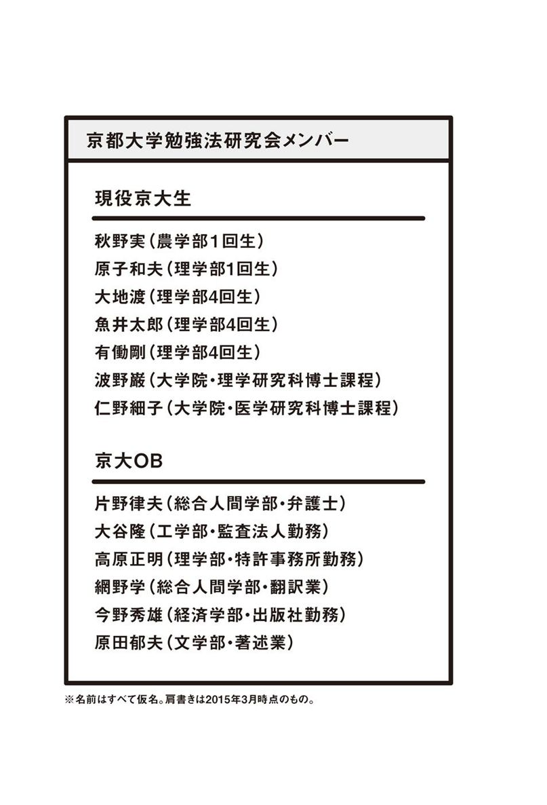
目次
Ａ 立ち止まって考える Ｂ まずは全体像を把握する
Ａ 自分でとことん考える Ｂ 他人と議論する
Ａ 専門性があれば不要 Ｂ 幅広い教養は必要
Ａ 素直に従う Ｂ 疑ってかかる
Ａ 自習だけでＯＫ Ｂ 積極的にした方がいい
Ａ 得意分野を伸ばす Ｂ 克服する
Ａ その場でメモを取る Ｂ あとから整理する
Ａ 解けるまでやる Ｂ 人に相談する
Ａ 関連する資料や本を多読する Ｂ １冊の基本書を精読する
Ａ やさしい入門書 Ｂ 背伸びした重厚な本
Ａ 机で姿勢を正して読む Ｂ 好きな場所で読む
Ａ 常に新しいものに挑戦する Ｂ １冊を何度も繰り返す
Ａ 書き込みは極力控える Ｂ どんどん書き込む
Ａ とにかく丸暗記する Ｂ 理解することを重視する
Ａ 大事に取っておく Ｂ さっさと捨てる
Ａ 穴のないプレゼン資料を用意する Ｂ 資料はシンプルＯＫ
Ａ 覚えにくいものは音読する Ｂ 黙読だけで十分
Ａ きれいに整理する Ｂ 無理に整理しない
Ａ 多少ラフでもとにかく表現する Ｂ 文法や構文を大切にする
Ａ 単語帳で覚える Ｂ 英文を読んで自然に覚える
Ａ 日本人と英語で話す Ｂ ネイティブと英語で話す
Ａ 通った方がいい Ｂ 外国人の集う場所の方がいい
Ａ 硬い内容の例文集を読む Ｂ 好きな小説や洋楽を楽しむ
Ａ 受けた方がよい Ｂ 受けなくても大丈夫
Ａ 流行の本 Ｂ 自分と関係がありそうな分野の本
Ａ 朝 Ｂ 夜
Ａ やる気のあるときに勉強する Ｂ 疲れていても毎日勉強する
Ａ 終わるまで机から離れない Ｂ 時間で区切る
Ａ 何もしないで過ごす Ｂ 目的を持って過ごす
Ａ ぎっしり詰め込む Ｂ 多少遊びを持たせる
Ａ なるべく早いうちがいい Ｂ 忘れた頃がいい
Ａ どんどん受けるべき Ｂ 無理して受ける必要はない
Ａ できるだけ前倒しで仕上げる Ｂ 直前に集中的に仕上げる
試験問題の裏には出題者の意図がある
現代社会に生きる人々は、入学試験、資格試験、入社試験、昇進・昇格試験など、さまざまな場面で試験を受ける機会があります。それぞれの試験には独自の出題形式があり、それに応じた試験対策が必要になります。
特に入学試験や入社試験には、出題する側が「どういった人に来てもらいたいと考えているか」ということが強く反映されます。その具体例として、東京大学と京都大学の英語の入試問題を例に、出題する側の考え方の違いを見てみましょう。
次ページ以降から、東大の入試問題が２つ、京大の入試問題が２つ、それぞれ続きます。
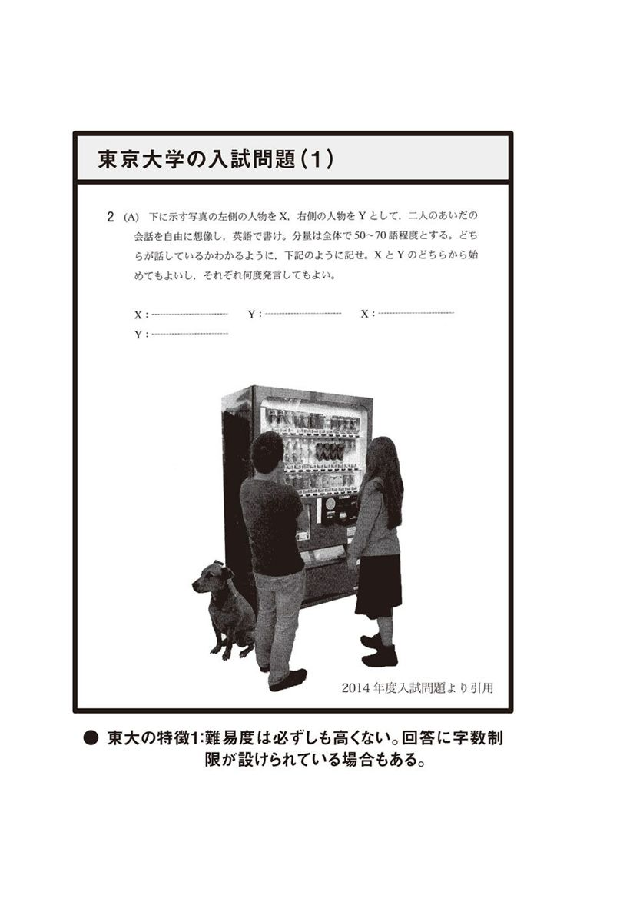
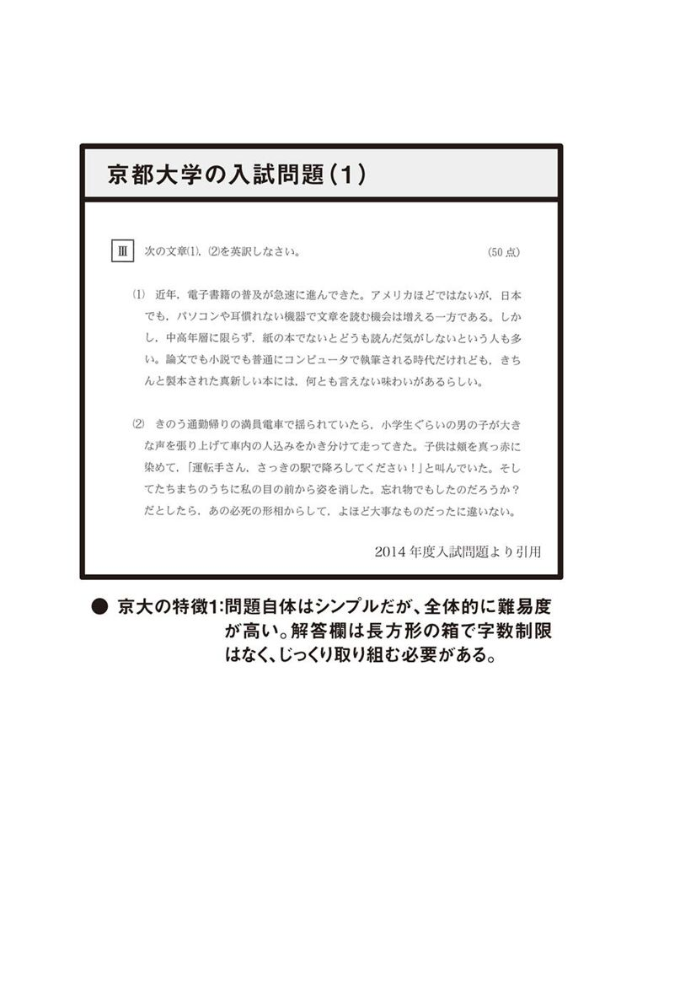
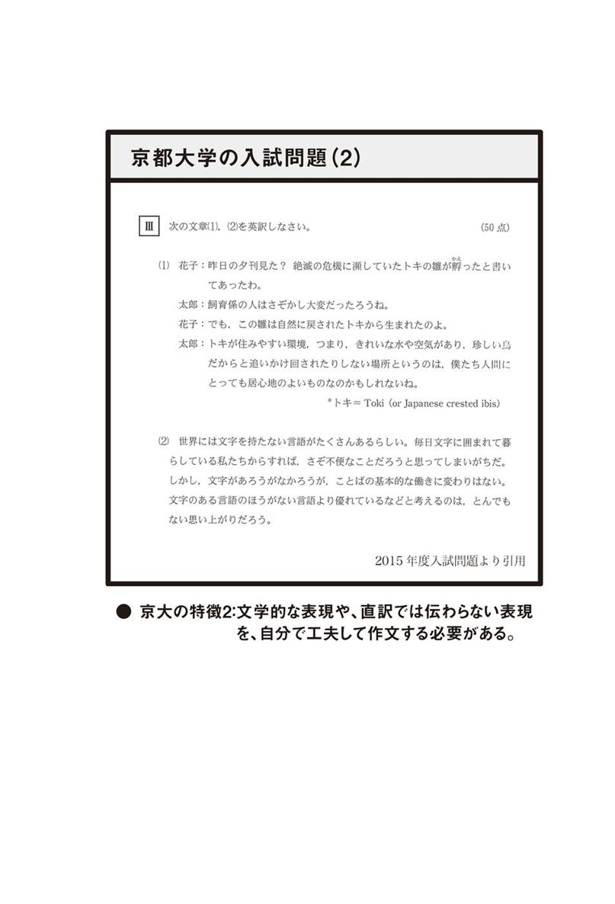
東京大学はその前身である東京帝国大学のときから官僚や裁判官・弁護士といった法曹関係者を多く輩出しています。日本が近代国家としての歩みを始めた頃、欧米の強国と並ぶために、そういった人材を必要とし、そのために東京帝国大学が作られたのです。そのため、試験問題では要点を端的にまとめたり、多くの問題を早く正確に解いたりすることが求められるという傾向があります。
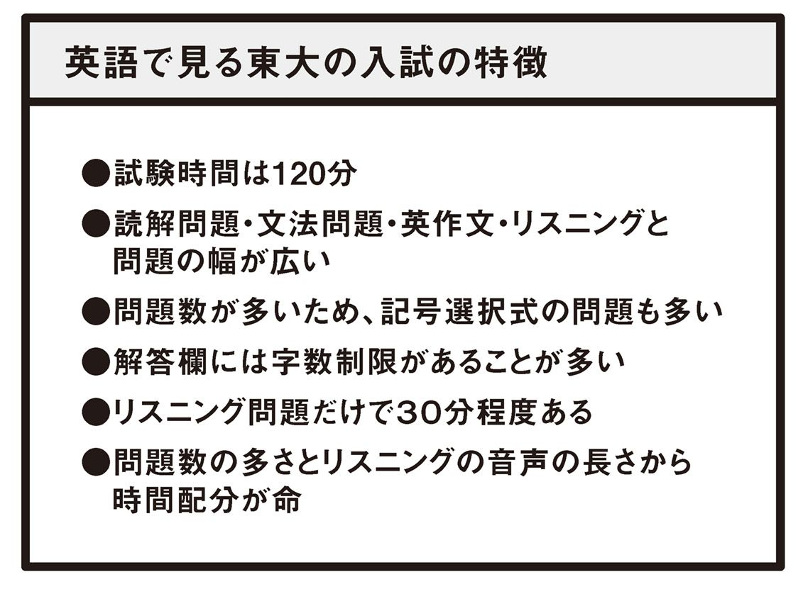
一方の京都大学は、前身の京都帝国大学のときから、「自由の学風」という言葉で表現されるように、研究・学問の場としての性格が強いといわれます。試験問題で特に目を引くのが大きな解答欄。そこに書き込むべき解答は自由な発想力も試されているとされ、単純な知識だけではなく、その知識を活用して、新しいものを生み出す力が問われています。
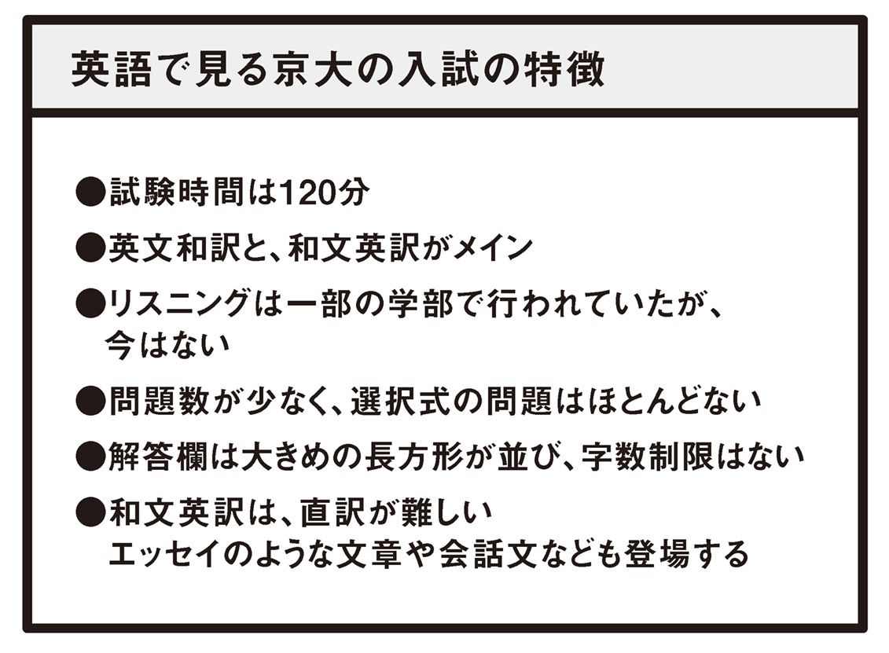
両校とも、試験問題を解くには高校までに学習する内容をしっかり理解していることが前提条件となりますが、そのうえで大学側の求める人材像が試験問題の形式に大きく反映されているのです。

一般には「エリートの東大・変人の京大」と言われていたりもします。現在も、国公立大学の中で、官僚になる人が一番多いのは東京大学です。一方で、自然科学分野のノーベル賞を受賞した学者が日本で一番多い大学は京都大学。常識とされていることに疑いを持ったり、無理だとされていることに果敢に挑戦したり、そんな独創的な研究が多くのノーベル賞研究者を輩出することにつながっています。
官僚はとにかく激務で、膨大な量の資料に埋もれながら、国の政治の実行部隊として力を発揮しなければいけません。そこで必要とされるのは、みんなをあっと言わせるような突飛な考え方ではなく、決められたことをできるだけ早く、間違いのないようにさばいていく能力です。もしも官僚が「こういう考え方もあるんじゃないか」と立ち止まって考え込んでしまうと、役所の仕事がストップしてしまって、とんでもないことになります。
勉強の目的はテストでいい点を取ることではない
さて、京都大学の現役学生と京都大学の出身者で構成される「京都大学勉強法研究会」は、その名のとおり、勉強法について考えている人たちの集まりです。ただし、彼らにとっての勉強法というのは、一般的に「勉強法」としてイメージされるものとは少し性格が異なるかもしれません。というのも、一般的な勉強法はしばしば「テストでいい点を取る」ことを目標に設定しています。京都大学勉強法研究会にとっての勉強法も、効率よく、なおかつできるだけ苦痛に感じたりすることなく勉強するための方法であるのは違いありませんが、その目標は「勉強したことを研究や仕事にきちんと活かす」ということです。テストで合格点を取って、それで終わりというのではなく、日々勉強しながら、それぞれのフィールドで活かし、さらに勉強を続けるというサイクルですので、ある意味では「終わりのない勉強」のための勉強法です。
そこで重要になるのは、いい点を取るための小手先の「テクニック」ではありません。物事の本質を理解し、日々学習を続けていくための「姿勢」といえるでしょう。試験の出題形式に応じて対策を講じておけば、確かにその試験ではいい点数が取れるかもしれませんが、長い目で見たときに、その勉強が役に立つかどうかはわかりません。これに対して、本質をつかむための勉強法を身につけておけば、どのような場面においても、効果を発揮することができるでしょう。
本質力を身に付ければどんなことにも応用可能
独自の発想力と、決められたことをこなす力。その二つの間には優劣はありませんが、目指す方向性がはっきりと異なるのはこれまで見てきたとおりです。「官僚」と「研究者」、その両方を国が必要としているのと同じように、個人においても、それぞれの力をあわせ持つことができれば、すばらしいことでしょう。本質をつかむ力＝「本質力」があれば、そのどちらの力をも高めることができます。
東京大学と比べて「変わり者」が多いとされる京都大学ですが、京都大学勉強法研究会の中にも、一般の人が「えっ」と驚くような経験の持ち主や、独特の経験に裏打ちされた変わった勉強法を実践している人がいます。浪人して苦労しながら京都大学に合格した人もいれば、「そんなに一生懸命勉強したつもりはないけど」と言いながら現役で合格した人もいますし、卒業後、スムーズに一流企業に勤めた人もいれば、各地を転々としながら、職業をその都度変えているような人もいます。研究者や会社員、あるいは起業家など立場はさまざまですが、彼らが普段行っている勉強法と、なぜそのような勉強法を編み出したのかを知ることで、本質をつかむ勉強法を体得することができるはずです。
勉強をしたいと思う理由は人それぞれでしょうが、どうせなら一時しのぎのテクニックではなく、自分の血肉になるような勉強がいいとは思いませんか。「必要なのはわかるけど勉強するのは苦手だ」「今まで調べた勉強法が自分に合わなかった」という人も、ぜひ、この本を読んでチャレンジしてみてください。
勉強をしていると、いろいろとわからないことが出てきます。「結論はなんとなく理解できるが、そのプロセスがわからない」「大部分は理解できているが、どうしても一部納得のいかないことがある」といった具合です。細かい疑問点が出てきた際、その都度立ち止まって完璧に理解できるまで粘るべきでしょうか。それとも、細かいことは気にせず先に進んでしまうべきでしょうか。
せっかく勉強するのなら完璧にしたい──。そう考える人もいるかもしれませんが、難しい場合が多いです。例えば小学校で割り算を習う際、こんな説明をされます。
「３つのりんごを３人で分けると１人１個ずつ。だけど、３つのりんごを０人で分けることはできません。だから、０で割ってはいけません」
実は、ある数字を０で割るということについて、これまでにも数学者たちはいくつもの論文を発表し、今なお研究が続けられています。
もしも０で割る意味を完璧に理解しようとすると、そのことだけに人生を丸ごと捧げることになりかねません。
難しい理屈がわからなくても、それで困ることがないならどんどん勉強を先に進めたほうが、基礎力をアップさせることができます。
何事もやり始めのうちは深く考えず「そういうものだ」と受け止めていくことが大事なのです。
仕事においても同じことが言えます。「細かいことは実務を通じて経験しないとわからないことも多い。まずは仕事全体の流れをつかむことが大事」（網野さん・理学部３回生）だからです。しかし、どうしても細部まで完璧に仕上げたい勉強や仕事がある場合は、どのようにすればよいのでしょうか？
新しい勉強に取り組む際に押さえておくといい考え方に「８：２の法則」があります。
「８：２の法則」とは、あるタスクを全部こなすのに必要な総労力が「10」であるとしたら、「２」の労力がタスクの最初の８割を仕上げるために、「８」の労力がタスクを完璧に仕上げるための残り２割に使われるという法則のことです。この法則が適用される代表的な例として挙げられるのが大学入試センター試験。どの教科も８割前後の得点率を目指すのが最も効率的であり、９割～満点を狙うのは効率が悪いといわれています。８割を超えた完成度を目指した途端、そのタスクにかかる労力は一気に跳ね上がります。
細部までを突き詰めた「完璧」を目指すための道は険しく、効率が悪い作業にならざるを得ません。
ある分野のエキスパートになるなら、「８割理解したことに満足せず、腰を据えてじっくりと残りの２割に取り組むべき」（原子さん）ですが、それは全体像を把握してからでも遅くはありません。
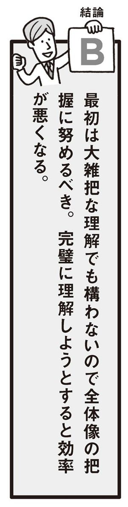
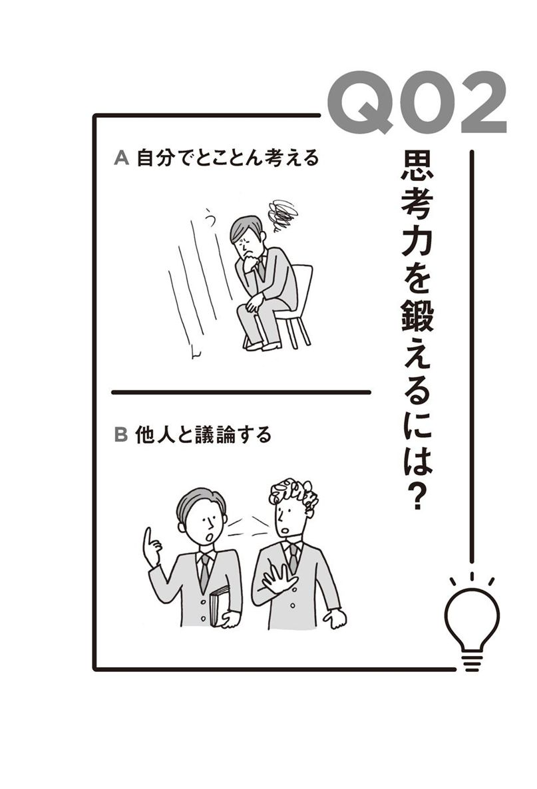
単に知識を吸収することだけではなく、勉強を通じて思考力を養うことを目指す人もいることでしょう。しかし、思考力を鍛えるといっても、具体的にどうすればいいのでしょう。たとえば自分でとことんまで考えてみるという方法は効果的でしょうか。
他人と話すことでより深い理解を得られる
自分でとことん考えてみる。言葉だけ聞くと確かによさそうです。
しかし「それだけじゃ頭打ちになっちゃうから、議論は必要ですよ」と話す秋野さん。自分で考えることはもちろん大事ですが、どうしても思考が袋小路に陥ったり、独善的になったりしてしまいます。こういった事態を避けるために、他人と議論することが必要です。秋野さんは議論の最も大切な要素として「自分の考えや知識を相手にもわかるよう説明する」ことを挙げています。
人に説明するためには、知識をしっかり身に付ける必要があります。考えを伝えるプロセスを通して、思考力が鍛えられます。
大谷さんも社内で定期的に同僚と行う勉強会で、そのことを痛感したそうです。勉強会では、それぞれのテーマについての講師役を持ち回りで担当をしています。
「自分が担当になって教えたり、質疑応答に答えたりしたテーマについて家で必死に勉強するから、特に理解が深まったよ」（大谷さん）
また、面と向かって説明を行う際には、予期せぬ質問にもさらされるため、それぞれのケースに応じた回答を瞬時に見つけ出す必要があります。幅広い応用力が試される質疑応答は、柔軟な思考力を養うにはうってつけです。
客観的な視点を得るには議論は不可欠
また、議論を通じて自分が今やっていることの本当の価値や意味、あるいは欠点などに気付くことも少なくないようです。魚井さんには、卒業論文に関する苦い思い出があります。論文を書くために苦労してデータを集めましたが、それを指導教官に「使えない」の一言で切り捨てられ、卒業論文の締め切り直前に実験のやり直しを命じられる事態に追い込まれました。
納得がいかない魚井さん。周りの友達や先輩に状況を説明し、自分の集めたデータを見てもらったところ、「確かに先生の言うとおりだ。こんなわかりやすいミスなのに、何で気付かなかったの？」と言われてしまいました。魚井さんは「無意識のうちにデータの欠点を見ないふりをしていた」と当時を振り返ります。
このケースだけでなく、人間は自らに都合の悪い事実から目を背けたり、逆に物事を自分の都合の良いように解釈してしまったりしがちです。こうした落とし穴にはまりこみそうなとき、助けになるのが他者によるサジェスチョン。すなわち、自分以外の誰かに客観的視点を提供してもらうことです。たとえば、良いアイデアが浮かばず煮詰まっている時に、友達と話していて偶然大きなヒントが得られることも珍しくはないでしょう。あとから冷静に考えると「どうしてこんな簡単なことに気付かなかったんだ」というようなことであっても、一人きりで考え込んでいると意外に見過ごしてしまいがちです。
他人との議論なしには、自らに対する客観的視点は得られません。自分の置かれている現在位置を確認する意味でも、他者とのコミュニケーションは重要といえます。
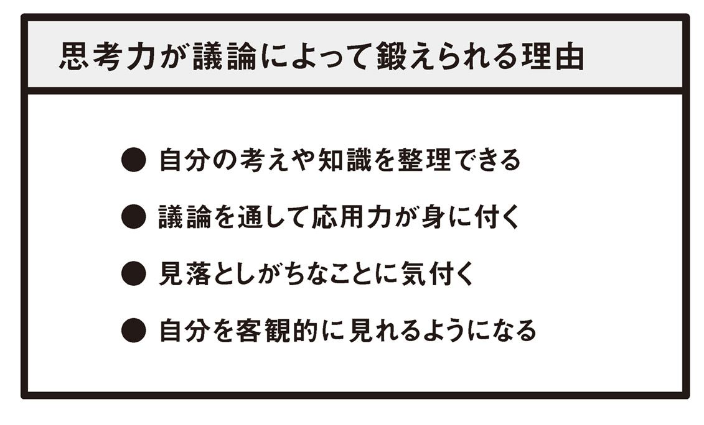
ビジネスにおいても重要な対話
大学での研究や勉強一般に限らず、ビジネスに関しても人との対話は重要です。
「自分の頭だけでとことん考えるというのは自己満足になりがちなんだよね」という高原さんは、初めて大きな仕事を任された際、長時間かけて、自分でも「完璧だ」と思える資料を独力で作り上げたそうです。
しかし翌日、それを得意げに上司に見せたところ、ものすごい量のダメ出しを受けたうえ「どうしてもっと早く相談しなかったんだ」と大目玉を食らったといいます。「何にどれだけ時間を使うかというのは、自分一人で判断しづらいこともあるよね」というように、自らの仕事の効率や生産性などを客観的に捉えるためにも、他人との議論は有効です。
このように、思考力を鍛えるには、一人で考えるのではなく他人と議論するのが有効です。ただし、あるトピックについて他人と議論をする場合、その分野についての必要最低限の知識は独力で身に付けていなければいけないでしょう。本当に何も知らない状態で参加しても、議論は成立せず、おしゃべりに終始するからです。
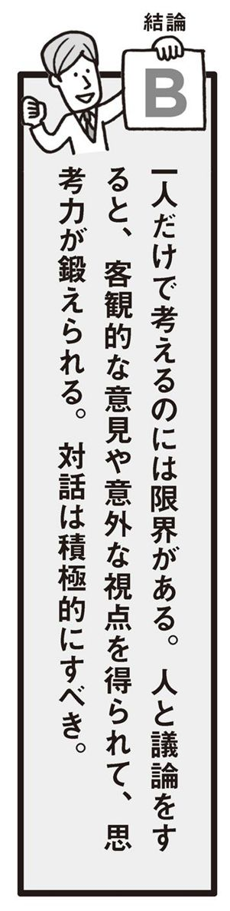
幅広い教養を身に付けている人は会話の引き出しも多く、初対面の相手から「頭が良い」という印象を持たれやすいですが、いわゆる「器用貧乏」に陥ってしまうこともあります。
一方で、まんべんなく教養を身に付けるのではなく、ある分野においては無敵の強さを発揮するというような、自らの専門性を追求する生き方を取れば「器用貧乏」にはなりません。ただし、それもやり過ぎると最悪の場合、「あの人は××以外はまったくだめだからなあ」と思われてしまうかもしれません。
幅広い教養と専門性の追求。どちらも大切なことに思えますが、どのように折り合いをつければいいのでしょうか。
視野の広さの「教養」・武器になる「専門性」
「最初から『自分の専門はこれだ』と決めてかかると、可能性を狭めることになる」と主張する大地さん。自分がやりたいこと、興味の対象、将来の夢などは、特に若いうちは、たまたま出会った人やものによって大きく変わります。「この人に出会っておけば良かった」、「この分野に関心を持っておけばよかった」という後悔をしないためにも幅広い教養を身に付けておいたほうがいいだろうという考え方です。
幅広い教養があると、いろんな人と接することができ、より広い視野から自身を見つめ直すことができます。
教養があるということは、さまざまな考え方に触れる土台ができているということなのです。
教養がもたらすものの一つとして、自分自身への客観的視点が挙げられます。一つのことに「深く」のめり込むだけでなく、いろいろなことを「広く」知っていれば、間違った方向に進んでしまった際にも修正が可能なのです。さまざまな分野にアンテナを広げることで育まれる視野の広さを考えると、やはり教養は重要といえます。
一方で専門性を重視する立場から、「幅広い教養を否定はしないが自分の武器を持つことのほうが大事」と言う有働さん。自分とほかの人を明確に区別する専門性を身に付ければ、それは「武器」になる、ということです。
「多少アンバランスになったとしても、一つのことを徹底的に究めている人間には、自分の専門を武器にして生きていけるという絶対的な強みがある」（有働さん）という指摘にもあるように、学者からスポーツ選手まで、各分野のトップにいるのは結局のところ、その道の専門性を突き詰めた人です。
また、専門性とは社会の中における自らの立ち位置を明確にしてくれるものでもあります。「自分にはこれがある」と言い切れる得意分野を一つも持っていない人は、単なる便利屋で終わってしまいがちです。
周りの人間にはない、自分だけの「強み」とは何か。これを常に自らに問い続けることが重要といえます。
幅広い教養があるから専門性も深められる
しかし、「専門性の追求」をするだけでは不十分なのでしょうか？
前職では半導体の回路設計が専門だった大谷さんは、半導体のことをとことん勉強したことで、半導体というパーツだけでなく、製品全体のこともわかってきたと感じています。
「どの分野においても、ある部分に関する専門性を究めることによって、その周りのものが自然と理解できるようになるということはある」
専門性を突き詰めることによって自然と身に付く教養もあるということです。ある程度の教養が身についたと感じたら、自分の「武器」を見つけるために、専門性を深めていけばいいし、その過程でまた教養が身に付くのです。その教養は、専門性をさらに深めるのに役立ちます。
一般的には人間のスキルは「Ｔ字型」が理想と言われています。この場合、Ｔの横棒が広い教養。縦棒が掘り下げた専門性を表します。つまり教養と専門性、どちらも重要という意味なのですが、知識や技術といったものは分野ごとに独立はしておらず、必ずどこかでつながっているものであることには留意が必要でしょう。
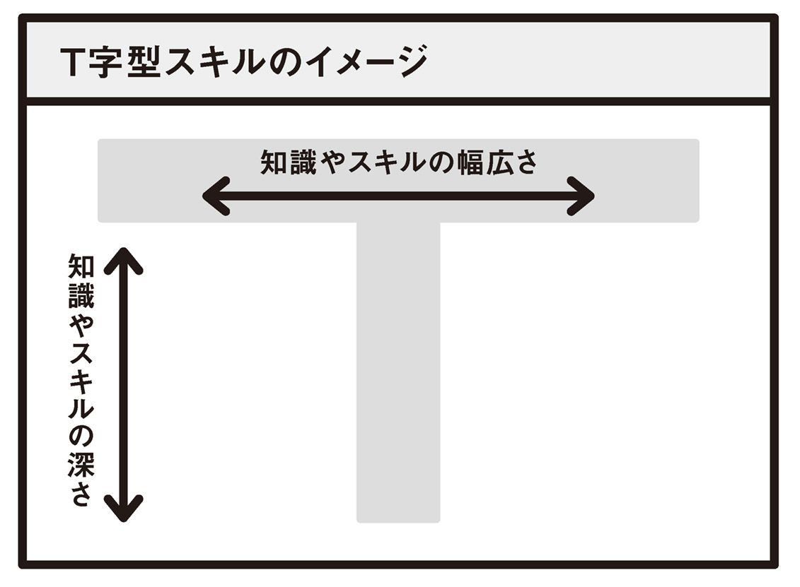
自分の専門はこれだと決めて「これだけやる」と決意したとしても、幅広い教養がなければどこかで大事なものがこぼれ落ち、結局は専門性の追求も不十分に終わる可能性があるということです。幅広い教養を身に付けたうえでこそ、心置きなく専門性の追求ができるのです。
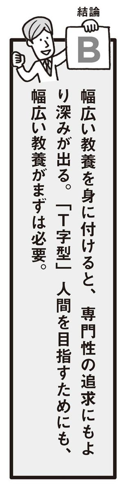
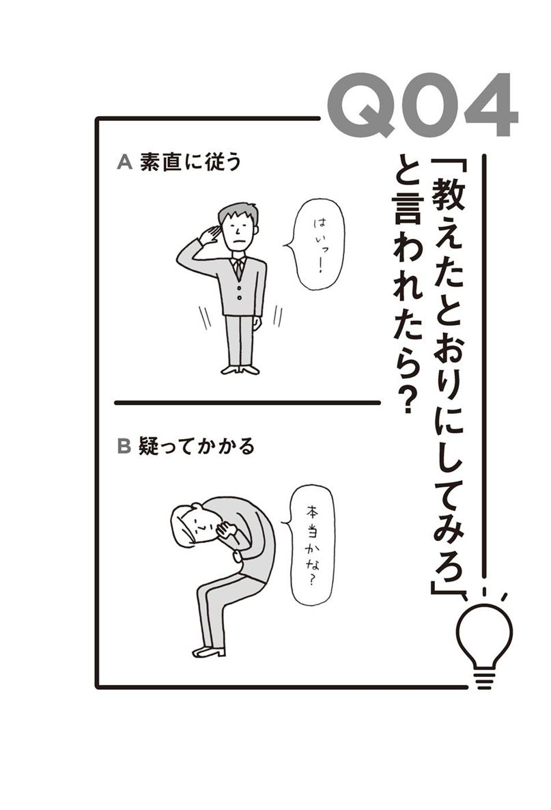
初めての問題に挑戦するとき、ただ言われたとおりに内容をなぞっているだけだと、自分で考える力が身に付かないのではないかと不安に思う人もいるかもしれません。
「重い球と軽い球を同じ高さから落としたら、重い球のほうが早く落ちる」。世の中の大多数の人が、そう信じていた時代に、ガリレオ・ガリレイは実験で、その考えが間違っていることを示しました。
世の中で当然とされていることを疑うことは、ガリレオのようにいつまでも語り継がれる功績を残すことにつながるかもしれません。
見落とされがちな「言われたとおりにやる」効用
「世の中の決まりごとや法則をすべて一から疑ってかかっていたら、仕事も勉強も何もできないよ」
そう言うのは理学部数学科の大地さん。初めのうちは教えられたことを素直に受け入れた方が学習の効率がよいのです。疑問に思ったことはあとから振り返ることもできます。大地さんは大学で数学の授業を受けたときに、高校までの数学が、わかりやすさを優先させるために、あえて本質の部分をぼかしていたり、省略して教えていたりすることに気付き、驚いたといいます。
典型的な例として大地さんが挙げるのが小学校で習う分数の割り算。分数の割り算の「やり方」は覚えているけど、「なぜそうなるのか」について、先生がどのように解説してくれたのか、きちんと思い出せる人は少ないのではないでしょうか。
「なぜ分母と分子をひっくり返してかけるのかを論理的に説明したところで、小学生はかえって混乱してしまうはず」（大地さん）
「なぜそうなるのか」にいったん目をつぶり、基本的な考え方を先に身に付けることが大事。その本質については大学以降で「本当の」数学を学びたい人が学べばいいというのが大地さんの考えです。
「言われたことを疑わずにやる」というのは、人に命令されたまま、自分で考えることなくやっているだけのようにも感じられます。しかし、物事を新しく始める際の基礎固めとしては極めて効率的な方法なのです。
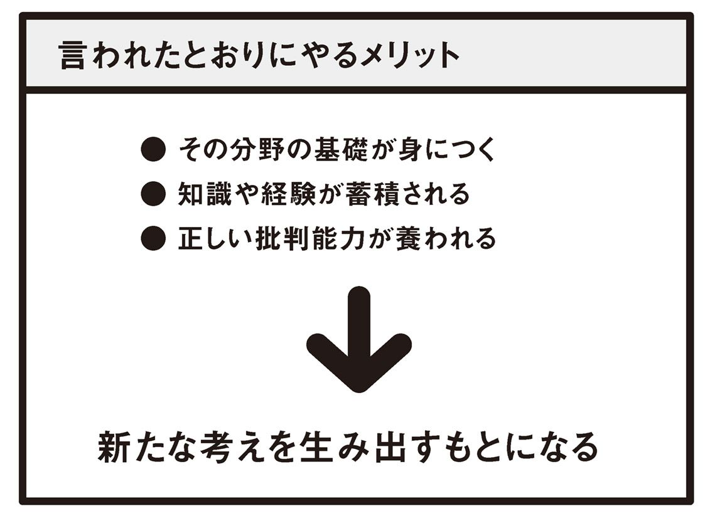
「言われたとおりにやる」ことで蓄積が生まれる
さらに、「言われたとおりにやる」ことで、基礎力だけではなく、応用力も身につくという意見もあります。
「ある程度経験を積んでからでないと、正しい疑い方もわからない。逆説的ではあるが『言われたとおりやる』経験こそが適切な批判能力を育てる」（原子さん）という主張も、よく考えてみれば当然のことで、そもそも何も知らない状態では、与えられた指示が正しいかどうかを判断できません。
裁判官が下す判決は、このいい例でしょう。ある犯罪者には３００万円の支払いが命じられているのに、別の似たような事件の犯人は、たった５万円の支払いが命じられただけとしましょう。これでは３００万円の支払いを命じられたほうは納得できないし、周りの人々も不思議に思うことでしょう。
こんなことが起こらないように、裁判官はこれまでの同じような事件ではどのような判断が下されたかを徹底的に調べます。過去の判断＝「判例」をもとにして、今回の事件はそれと比べて似ている部分はどこか、異なっている部分はどこか、いろいろと比較したうえで、妥当な判決を決めます。
これまでの判例のほうが、不適切な部分があると感じたときには、どういった点で問題があるのかということを示し、「だから今までの判例とは異なるが、この判決を申し渡す」と説明する必要があります。
勉強にしても、仕事にしても、同じことが言えます。これまで取られてきた方法や考え方がおかしいと思ったときに、ただおかしいと言うだけでは人を説得するだけの力はありません。
なぜそのように考えられてきたのかを理解することで、「それでは、こちらのほうがより良いやり方ではないですか」と提案することができます。
適切な「疑い方」ができる人間になるためにも、言われたとおりやるという経験は必要不可欠なようです。また、疑うだけでは前に進めません。「こんな工夫はどうだろう」と考える、つまり対案を生み出し、試してみることが大事です。自分で対案を考え出すときにも、言われたとおりにやってみた経験が生きてきます。
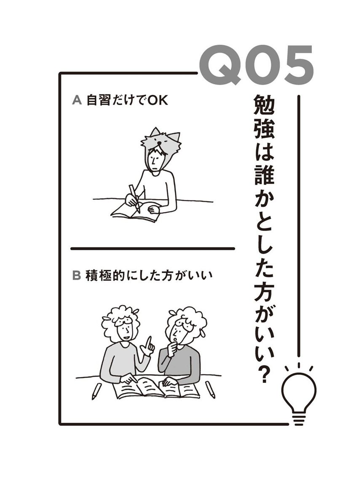
勉強がなかなかうまく進まないときや難しい問題に手も足も出ないときに、誰にも相談できないと、こんなふうに悩んでいるのは、自分一人なんじゃないだろうかと気持ちは沈んでいく一方です。
友達と一緒に勉強をすると、孤独感から解放されるだけでなく、わからない問題を教え合うこともできます。ですが、隣に座る友人は、時に集中の妨げになることもあるでしょう。
そうすると、一人で没頭しているときよりも、勉強が進まないかもしれません。勉強するために仲のいいグループで集まったはずが、あっという間に飽きてしまい、結局一緒に過ごしたほとんどの時間、遊んでいたという記憶がある人もいるのではないでしょうか。
孤独な勉強はストレスになる
「人は結局一人だと思って、受験勉強もずっと一人でしていた」と語る有働さん。有働さんは大学受験で浪人を経験していますが、予備校の友達と仲良くなり過ぎると勉強がおろそかになると考え、ある程度の距離を置いていました。勉強が行き詰まったときは、友達に相談することも考えましたが、一人でやり抜くのだと歯を食いしばり、家で枕に頭を埋めて叫んでいたこともあったそうです。
「志望校に合格することはできたので、間違っていたとまでは言えないけど、ずっと一人での勉強がつらかったのは事実」（有働さん）
高原さんは、友達とする勉強と、一人でする勉強とは異なるという持論の持ち主です。
「周りに知り合いがいると気が散ってしまう。一人のときが断然、集中して取り組めるし、そのときにしかひらめけないことだってある」（高原さん）
そのために、友達と話し合いながらやるような勉強は「純粋な勉強時間」にカウントせず、一人で勉強する時間は別に確保しています。
一方で、友達と一緒に勉強することで、自分が見落としているものに気付いたり、意外な発想が出てきたりすると主張する魚井さん。友達と一緒に勉強する時間を積極的に設けています。
そうするようになったのは、高校時代に友達と地理の勉強をしたのがきっかけ。放課後の教室で、黒板に大きな白地図を書き、みんなで互いに問題を出し合いました。同じ地理という教科でも興味のある分野や得意な分野はそれぞれ違うので、思いもよらない問題が出ることもしばしば。
「答えを考えるのに必死になると、それだけ勉強になるし、『あんな会話をしたな』という思い出が、記憶をより強く脳に残してくれる」（魚井さん）
魚井さんのように生徒同士で問題の出題や採点を行わせる学習法は最近注目を浴びつつあります。自分では理解していたつもりでも、人に説明してみると、自分の説明の中にあやふやなところがあることに気付くこともあります。
あるいは、完璧に説明できたと思っていても、「これについてはどうなの」と質問されて、そのことについて一緒に考えてみることで、より深く理解ができることもあります。
仁野さんも、わからないことがあると友人によく質問します。受験生時代は、教科ごとに、その教科が得意な友達と勉強していました。単純に答えを教えてもらうのではなく、その人なりの考え方も一緒に聞くようにしていました。
一つの問題にもいろいろな理解の仕方や解法があります。時には、自分の考え方を伝えてみて、「それ、面白いね」と言ってもらえると、うれしくなって、さらにやる気も湧くことでしょう。
真面目でストイックな人の一部には「勉強は一人でやるべし」という美学があるのかもしれません。確かにじっくり考えて答えを出すことが必要なときはありますし、テストのときには、一人で問題を解かなければいけません。
しかし、自分の中にはない観点で問題を考えることができるようになったり、勉強へのモチベーションを保ったりできる点において、友人と勉強をすることには大きなメリットがあります。
お互いに高め合うために必要なこと
もちろん、一緒に勉強するつもりが、気付くとおしゃべりに夢中になり、全然進まなかったという失敗が起こる危険性もあります。そんなときには、原子さんのやり方が参考になるでしょう。
原子さんは友達と勉強するときには、必ず時間を区切っていました。勉強を始めるときに終わりの時間も決めておき、終わりの時間になったら勉強の話で盛り上がっていても解散します。
休憩時間も同様に時間を区切ります。それぞれが別の問題に集中しているときに、一人が休憩を取ると、ついつい一緒に休みたくなるので、休憩時間も統一しました。また、友達と話をしたほうが、よりリフレッシュできるというメリットもあります。
ただし、長々と話し込むことがないように、「じゃあ今から10分だけ」といった具合です。お互いに時間を守ろうと約束をして臨むことで、だらけてしまうことを防いでいたのです。
「緊張感を持ってやっていると、自分の集中力が切れて友達のほうを見たときに、『まだ頑張ってるな』と思って、もう少し頑張ろうという気になれた」と原子さん。
さらに友達と勉強することで、勉強の習慣を身に付けた人もいます。細川さんは、勉強をしようと思ってもなかなか机に向かえませんでした。自分の意志の弱さが情けないと思っていたある日、友達に勉強に誘われます。
「『○時から図書館で一緒に勉強しよう』と約束してしまえば、それが拘束力になった。約束した以上、愛想を尽かされないためには勉強せざるを得なくなった」
最初は待ち合わせに遅れることもあった細川さんですが、一生懸命に勉強している友達の姿を見て、自分も頑張ろうと心に決めました。
「私は友人を『利用』しました。でも実は、友達のほうも、一人で勉強するよりやる気も出て、集中して勉強できたみたいです」
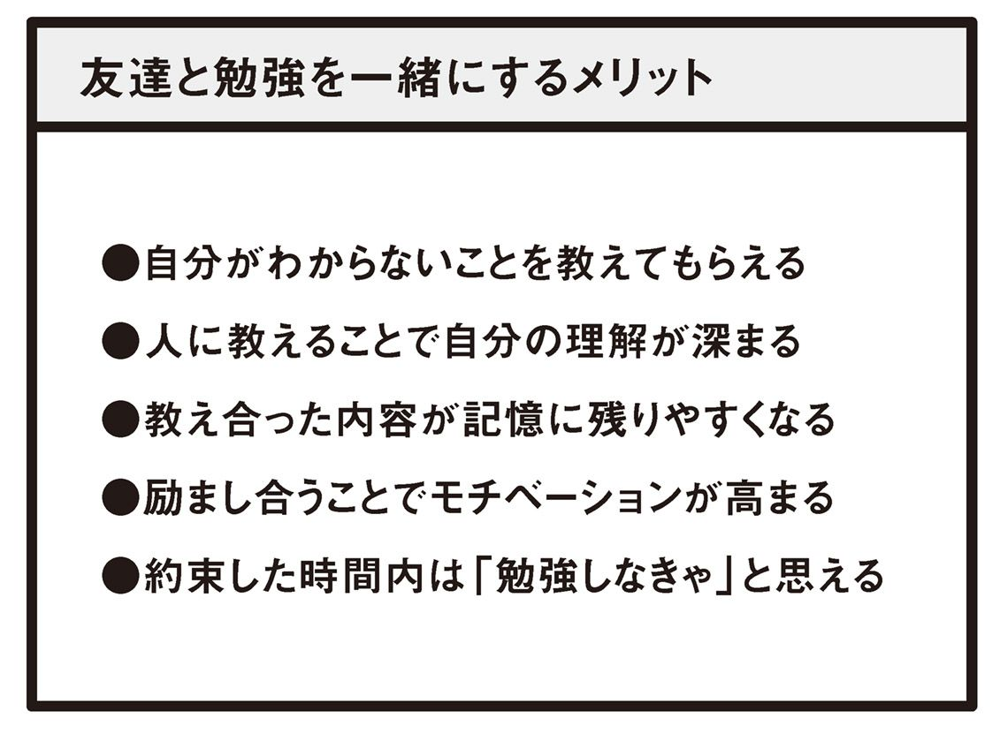
勉強の習慣付けのために友人を「利用」する......というと聞こえは悪いですが、どうしても一人で勉強ができないときや、気分が乗らないときに、他人との約束によって自分を縛るのも有効です。
お互いの頑張っている姿を見ることで、一人で勉強しているとき以上に頑張ることもできるはずです。
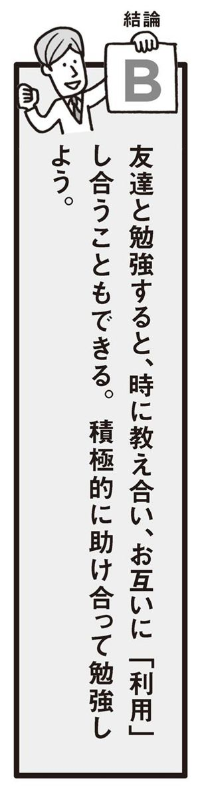
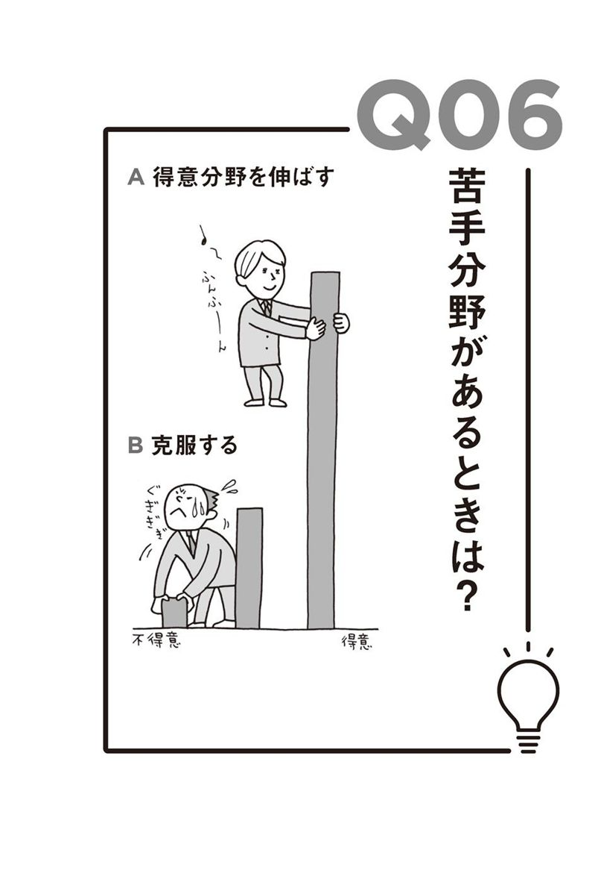
人には誰しも得意なもの、苦手なものがあります。苦手なものは早めに克服して、自分の短所を消したいと考えるのは自然なことですが、一方で自分の得意とすることをさらに伸ばしたい、究めたいと願うのも当然のことといえます。
苦手分野の克服と得意分野のさらなる探究。むろん両方できればベストなのですが、限られた時間の中で、どちらか片方を優先させなければならないときは、どうすべきか悩む人も多いはずです。
伸びしろが大きいのはどっち？
まず「苦手分野から手を付けるべき」と主張する波野さん。自分自身、得意科目ばかり勉強して、苦手な教科は後回しにしていましたが、教師にあることを指摘されて考えを改めました。
「『苦手科目に時間を割いた方が伸びしろが大きい』と言われて、一気に成績が上がるなら魅力的だなと思った」（波野さん）
たとえばセンター試験の場合、英語・国語・数学は２００点満点です。英語も国語も１９０点取れるけれども、数学がすごく苦手で30点ぐらいという人がいたとします。得意な英語と国語は、これ以上どれだけ頑張っても上積みできるのは最大で10点。しかし数学は、最大で１７０点も伸ばすことができます。10点増やすことに力を入れるべきか、１７０点増える可能性に力を入れるべきか、「８：２の法則」からも、どちらに力を入れるべきかは明白です。
何かが苦手であるということは、裏を返せばその分大きな伸びしろがあるということでもあります。苦手分野への挑戦は、ついつい避けてしまいがち。ですが、苦手を克服できた際に得られる成果の大きさに目を向けて頑張ってみましょう。
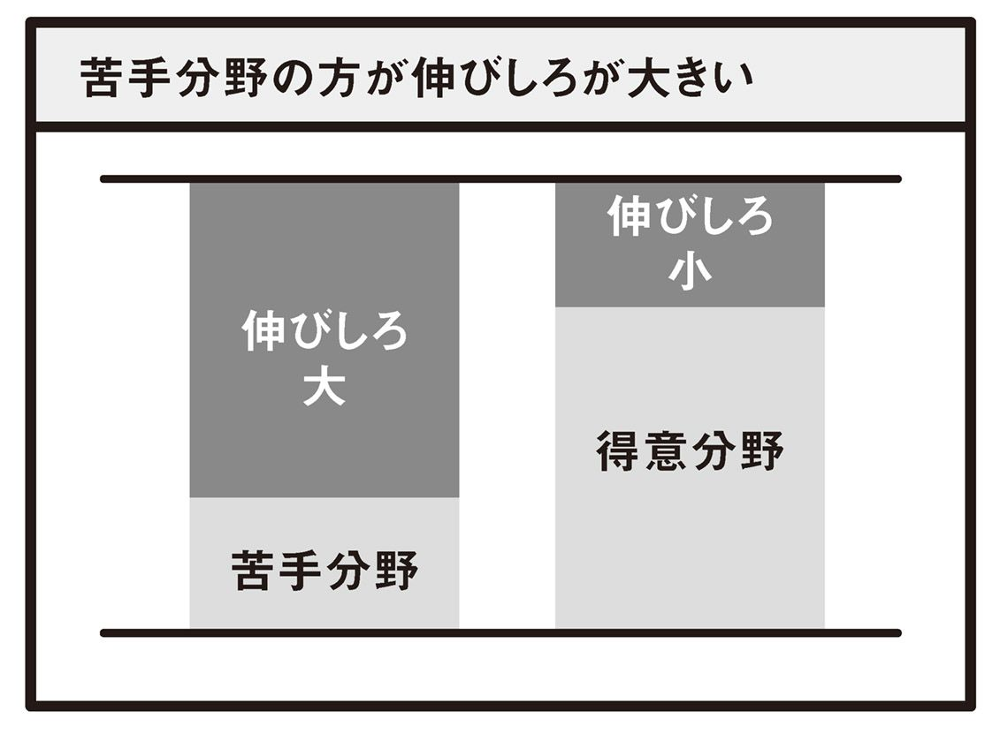
「短所」は目立つから要注意
勉強に限らず、社会人として生きるうえでも「短所の克服」は重要です。
「日本の会社は、長所を評価するよりも短所を見つけて減点することが多い」という高原さん。一般的に、人は誰かのいいところよりも悪いところに目が行きがちであると言われています。
「最終的には長所を伸ばして、ほかの人と差別化を図ることはもちろん大事。だけど、いろいろな分野で平均的な力を付けることで、悪目立ちしなくなる」（高原さん）
「すべてが平均的」というだけでは、自分の魅力が人に伝わりづらいかもしれません。ですが、人から注意されたり、自分ができていないと思っていたりすることをまずは克服する。長所を伸ばすのは、そのあとでも構わないのです。
自分にはほかの人にない武器があると信じていたら、思わぬところで足をすくわれた......。そんなことにならないためにも、まずは苦手分野を克服することから挑戦してみる姿勢が必要です。
苦手分野をうまく克服するには
苦手分野の勉強にはなかなか手をつけにくいものですが、既に勉強する習慣が身についている人であれば、簡単に着手できる方法があるのです。
勉強する時間になったら、まずは苦手分野から始めること。それだけです。
よくよく自分の勉強パターンを思い返してみましょう。苦手分野に手を出そうと思っても、なかなかやる気が起きないので、まずは自分の好きな分野から始めてしまう。そして、自分が好きなことだけやっているうちに、勉強を終わらせないといけない時間になってしまう。勉強をしなかったわけではないので、一応の達成感はある......。
どうでしょう。身に覚えはありませんか？
そんなパターンを打ち破って、１日のうちで苦手分野も必ず勉強できるように、苦手分野を勉強時間の最初に持ってくるのです。
その日に２時間ぐらい勉強しようと思っているなら、最初の30分でもかまいませんから、まずは苦手分野の本を開きましょう。苦手分野を勉強したあとは、自分の好きな勉強に打ち込むもよし。本当に大嫌いで仕方がないというときには、30分勉強したあとで、ごほうびとして遊んでしまってもかまいません。
勉強する機会があるたびに、苦手分野から着手する。そうやって、少しずつでも触れる機会をつくることで、自分の中での抵抗感が薄らいでいくのを感じることができます。
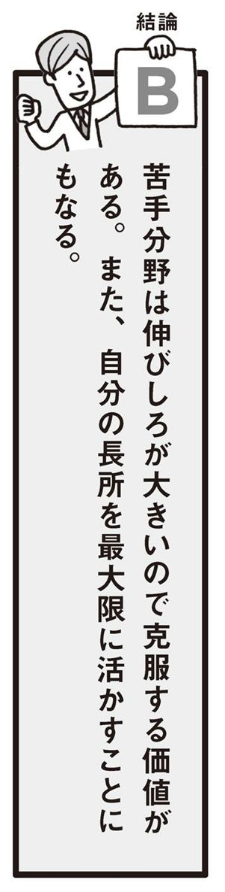
問題解決のヒントをもらったとき、皆さんはどうしていますか？ その場でメモを取りながら話を聞くという人もいれば、まずは話をしっかり聞いて、あとからじっくりと整理するという人もいるでしょう。
メモの取り方や活用方法を考えてみましょう。
あとから整理するにも「その場でメモ」は重要
「面倒くさがりな人ほど、その場でメモを取るべき。あとから整理しようと思っても、後回しにしてしまい、最終的には忘れてしまう」（今野さん）
今野さんは、これまでに自分が失敗した経験から、必ずその場でメモを取ることにしています。以前は、相手が話している最中に手元のメモに視線を向けるのは失礼だと思っていましたが、メモを取りながら話を聞いたほうが、大事な話を聞き漏らすこともなくなります。「せっかく話をしてもらったのに、それを忘れてしまう方が失礼だった」と考えを改めました。
話してもらった内容を全部書き留めることができなくても、キーワードだけでもメモしておけば、あとから整理することもできます。メモを取らずにいた場合、時間がたってから思い出そうとしても、記憶はどうしてもあやふやになりがちです。その結果、何度も同じような助言や注意をされることになり、周りからの信頼を損ないかねません。
人と話をしたときには、その場で確実にメモを取るようにしましょう。
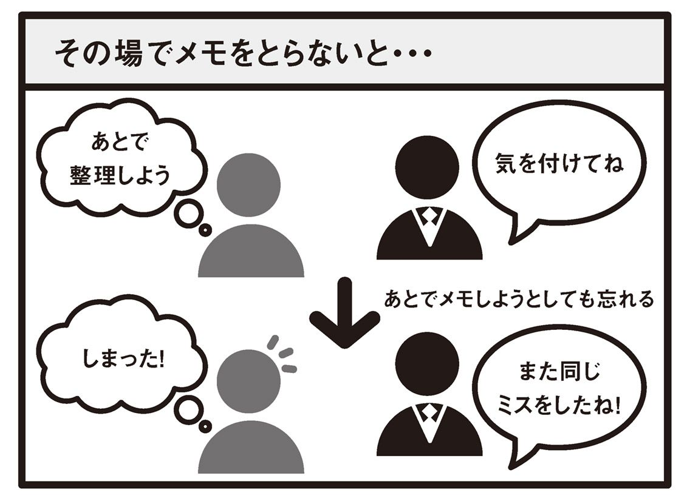
ささいなこともメモに残せば忘れない
メモが活躍するのは、人から話を聞いたときだけではありません。
原田さんは気づいたことをメモに書くようにしています。ノートの場合、開かなければ書いた文字が目に入ることはありませんが、メモを見やすいところに貼れば、何度も目に入るので忘れにくくなります。
原田さんのデスクの周りはメモでびっしり埋まっていますが、１日の終わりにその日に書いたメモを見返し、補足する必要があれば、書き足しています。
また、日付も書いておき、古くなったメモはノートに貼り直すか、必要がなければ捨てています。時折、ノートを見返すことで、過去のアイデアを活かすこともできます。
「忙しいときほど、面白そうなニュースが目に入ったり、使えそうなアイデアをひらめいたりするもの」という原田さん。
メモを活用するようになってからは、気になっていたニュースを調べたり、アイデアを練る作業をしたりできるようになりました。
ささいなことであっても、も即座にメモに取ることで、忘れることを防ぎ、また、最大限に活用することも可能になるのです。
無限に広がるメモの活用法
他にも、メモにはさまざまな活用方法があります。
「チームで仕事に取り組んでいるときには、自分のために取ったメモが、同僚や部下への指示代わりにもなったりする」と語る大谷さん。ささいなことでも口頭だけの指示で済ますのではなく、必ずメモを作ります。大きめの付箋を用意し、チームが使用しているホワイトボードに貼り付けておくことで、共有できるようにしています。お互いに「言った言わない」でもめることもなくなり、仕事がスムーズに進むようになりました。
さらには、自分の手をメモ代わりに利用するという大地さん。
「早めにやるべき大事な用事があるときは必ず手にメモをして、そのメモが消えるまでにその用件を終わらせることを自分に課している」
大地さんは、あえて消えやすい水性ペンで手にメモをします。外に出るときには手を洗えばすぐに消すことができますし、何より「消えるかもしれない」というプレッシャーがかかることで、大事な用事を後回しにせず、すぐに済ませようとする癖がつきました。
このように、メモは単なる記録にとどまらず、仕事のマネージメントやスケジュール管理にも活かすことができます。面倒くさがらずに、積極的に活用しましょう。

自分なりに相当頭を使っているはずなのに、どうにもわからない問題にぶつかってしまった。そんなとき、負けず嫌いな人の中には、意地でも他人の力には頼りたくない、絶対に自分の力で答えを出したいという人もいるかもしれません。確かに、なんとか自力で答えにたどり着けると大きな達成感が得られますよね。
しかし、難問にぶつかるたびに長い時間をかけて解くというのは、効率的ではないようにも思えます。
「制限時間」を意識しよう
最初の大学受験で失敗し、一年間浪人した経験を持つ有働さん。現役時代の時間の使い方について後悔しているそうです。
「どんな問題でも試験のようなつもりでやっていたから、答えがわかるまで、ひたすら一人で考えた。人に相談するなんて考えもしなかった」
確かに試験の本番で人に相談することはできません。しかし、同時に試験の時間は無限ではありません。有働さんは最初の受験で失敗するまで時間制限のことが頭から抜け落ちていたと言います。
「受験本番でも『時間があれば解けたのに』と悔しかった。でも、時間内に解くための勉強をしてこなかったのは自分自身だ」（有働さん）
浪人生になってからは、問題を解くときに時間制限を設けることにしました。時間内にわからなければ、後回しにしたり、人に聞いたりすることにしたのです。
制限時間を意識するようになってから、いいことが二つありました。すばやく解ける問題か、そうでないかの見極めができるようになったこと。そして、勉強自体が効率的になったことです。
「必要な知識が欠けていれば、時間をかけたところで答えにたどり着けないかもしれない。最初は人に聞くのが恥ずかしかったが、聞くようになってから、おかげで勉強はどんどん進んだ」（有働さん）
勉強や仕事には「いつまでに終わらせなければいけない」という時間的制限があるものです。
高原さんも、仕事で問題にぶつかったとき、自分でしばらく考えてみて、まったく歯が立ちそうにないときには、すぐに人に質問することにしています。
「難題に直面して、死にもの狂いで考えて答えにたどり着くという体験に意義がないとは思わないけど、仕事であれば『時間の無駄』と言われかねない」
高原さんの場合は、時間的に余裕のあるものの場合は、一晩じっくり考えることにしていますが、早く済ませたほうがいいと思われるものに関しては、一人で考えこむのは30分と制限時間を設けています。
また、人に聞いてすぐに答えが出ないこともありますが、仕事であれば、『自分がこのことついて困っている』という状態を共有しておくのも重要です。
時間が無限に使えるなら、いくらでも思い悩んでもいいかもしれません。しかし、現実には、なかなかそのような状況はないので、積極的に人に相談しましょう。
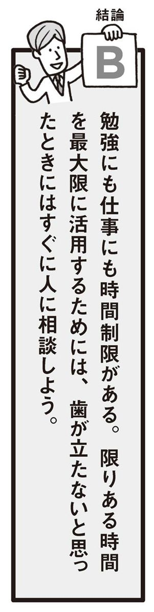
COLUMN
半年後でも１割しか忘れない学習法
人と教えあうことの学習効果は、研究によっても明らかにされています。アメリカのNational Training Laboratoriesによると、学習してから半年後に学習内容を覚えているか調査したところ、授業を受けるだけでは定着率は５％でした。読書で10％、視聴覚教育を使うことで20％、実演をすること30％と、定着率を上げることは可能ですが、まだまだ低い数値ですよね。
しかし、人と一緒に勉強していれば、定着率を一気に高めることができます。グループでのディスカッションをしていると50％、体験学習をすると75％とぐんと定着率が上がります。そして、お互いに授業するように教え合うと、定着率は90％に達するのです。このことから、「教えてもらおう」と受け身でいるよりも、能動的に学習に参加したほうがいいことがわかります。いつでも「人に教えられるぐらい」の気持ちで勉強しましょう。
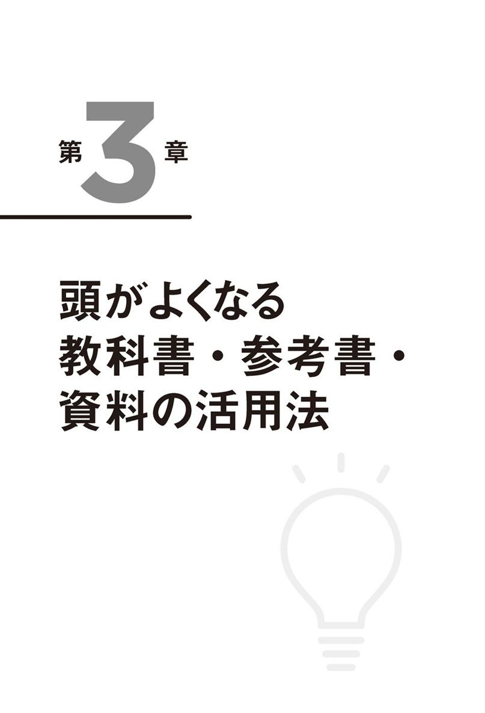
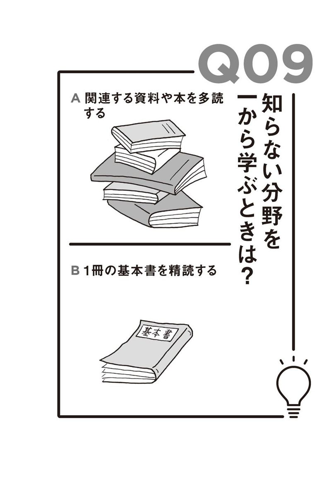
新しいことを勉強する際には、数多い関係する書籍や資料を、できるだけ多くの読むのがいいのでしょうか。それとも「これ」と決めた１冊の基本書を徹底的に読むのがいいのでしょうか。
関連資料の多読が有効なケース
「単に知識を増やすことができるというだけではなく、一つの事柄を多角的に捉えるためにも本をたくさん読むのがいい」と主張する片野さん。ある本でわからなかったことが、別の本の解説を読んだことでわかることもあります。
また、片野さんの言うように、たとえば法律をどのように解釈するかといった、いろいろな考え方を知っておくべき分野では、関連書籍をたくさん読んだほうがよい結果につながります。しかし、前提となるのは、その分野で誰もが知っておくべき基礎知識を身に付けていることです。
基礎がしっかりしていない状態では、関連書籍をいくら読みあさって勉強した気になっても、実はまったく身に付いていないというケースは非常に多いです。
また、勉強のための読書と楽しむための読書は違うということを忘れてはいけません。わざわざ本を買って、時間を使って勉強のために本を読むからには、知識を身に付けたい、理解を深めたい、という意識をきちんと持って臨むことが肝心です。その意識が薄いと、本を買うだけで満足してしまいかねません。
自分にあった１冊の
基本書をどう選ぶべきか
１冊の基本書と向き合って理解を深めることのほうが有効な分野は多いです。基本書は、初学者が知るべき内容を体系的にまとめられていることが多いので、効率よく学ぶことができます。たとえば、数学や物理などは基礎がわかっていないと全く解けない問題が多いですが、基本書どおりに順を追って理解すれば、最後までやり通せます。
では、どのようにして基本書を選べばよいのでしょうか？
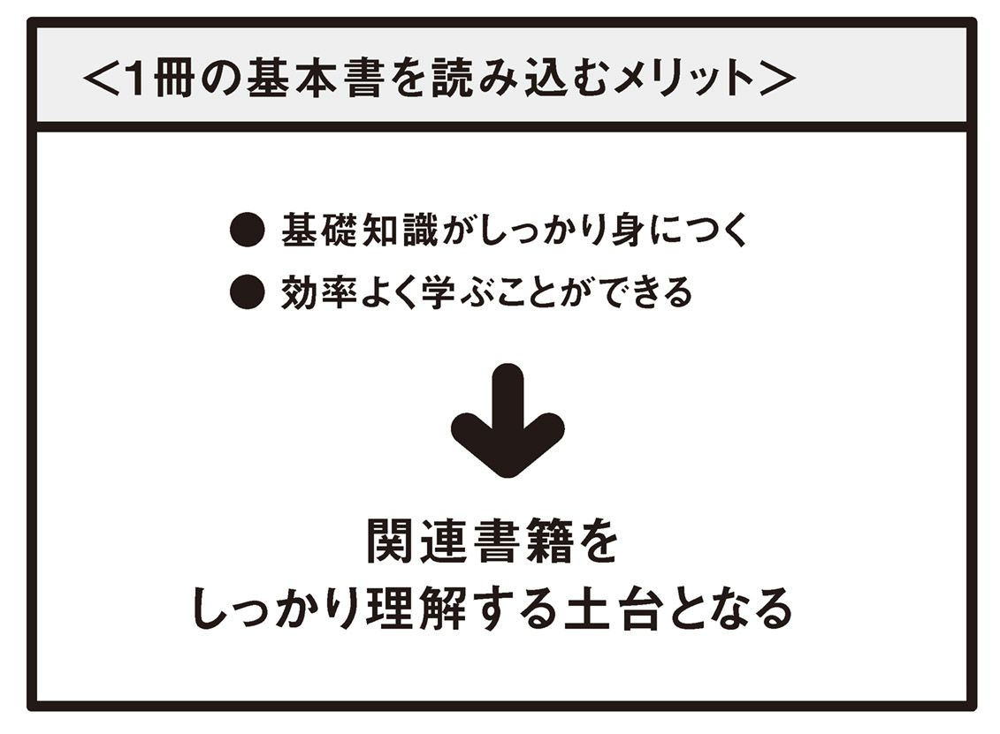
人間同士に相性があるように、人と本の間にも相性があります。どんな人にとっても「この本が最高だ」という本は存在しません。
ですから、「自分に合っていない本だと思ったら、いつまでも同じ本にかじりついているのではなく、違う本をさっさと探したほうがいいですね。」（仁野さん）というように、自分にとってしっくりくる本と巡り合えるまでは、いろいろと試してみる必要があるでしょう。
しかし、やみくもに本を試していては時間もお金もかかります。効率的に、自分に合った本を探すにはどうすればいいのでしょうか。
現物を見ないとわからないこともある
一番いいのは、同じ分野を勉強している人に聞くことです。
その人が実際に使っている本を借りて読めば、書店で立ち読みするよりもじっくり検討できます。また、その人自身がいろいろな本を試していれば、それぞれの長所・短所を聞くことができます。数人から話を聞くことができれば、誰もが読んでいる定番の本がわかったり、次に読むべき本のアドバイスももらえたりするかもしれません。
また、ネット書店で本を探す前に、書店に行って実物を見ておくことをおすすめします。ネット書店のレビューでは、内容について言及されることは多いですが、見た目についてはあまり話す人がいないからです。「図やイラストが載っていないと、頭に入らない」「こんなに細かい文字でぎっしり書かれていると気が滅入る」という人もいるはずです。長い付き合いになる本であれば、見た目も大事です。面倒くさがらずに足を運ぶようにしましょう。
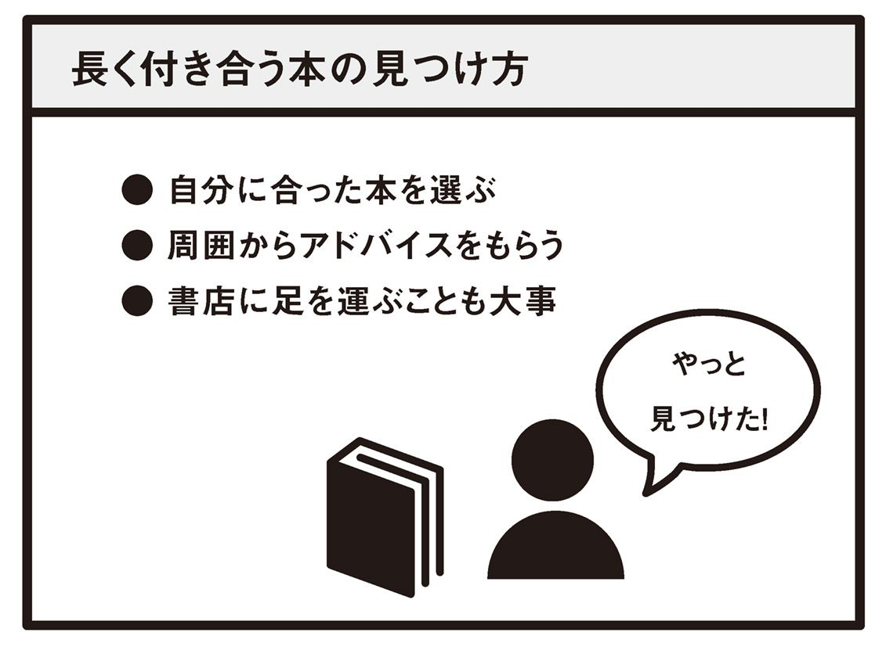
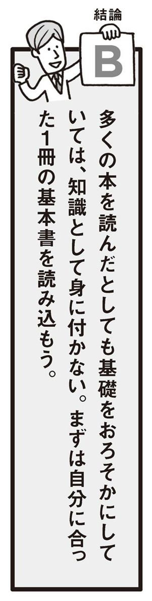
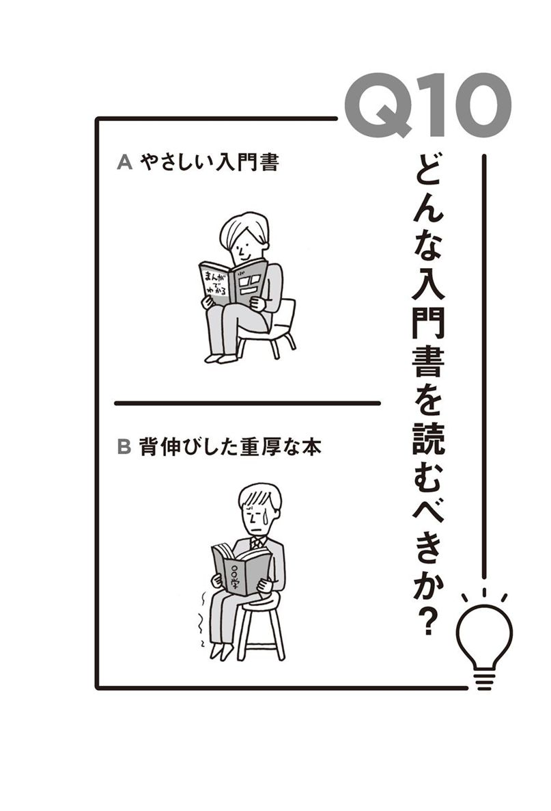
書店に行くと『まんがでわかる○○入門』や『本当にわかりやすい××』といった入門書をよく見かけます。一方で、ややとっつきにくいのですが、基礎から上級の内容まで網羅した重厚で難しい入門書もあります。
新しい知識を得るためには、どちらの本を読めばいいのでしょうか？
背伸びして買った本の活用方法
あえて、最初から難しい本を買うという人もいます。秋野さんの場合、買ってきた難しい本をいきなり読み進めるのではなく、いったん本棚に置いておき、「自分にとっての目標」としています。
本を読んで自習したり、大学の講義を聴いたりしたあとに、ときどき難しい本をめくってみると、以前はわからなかった部分がわかるようになっていることに気付くそうです。すると、きちんと理解はできていなくとも、「やっぱりこの分野は奥が深くて面白い！」というようにモチベーションを維持することにつながります。
「つらいなあ」と思いながら読むのではなく、やる気を奮い立たせるために難しい本を活用していると、その本を理解できたときに、大きな喜びを得ることができます。「今はわからないけど、必ず理解するぞ」と、やる気が出る人もいるでしょう。
また、難しい本はやさしい入門書では省略されがちな内容をきちんと解説しています。やさしい入門書を読んで、「何でここがこうなるんだろう？」と感じたときに、参照する副読本として活用すればよいでしょう。
入門書を買う前に調べることは？
結論を先に言うと、初学者はやさしい入門書で学んだ方がメリットは大きいです。ページ数もそれほど多くないので、一気に読み終える達成感を味わうことができます。また、第２章Ｑ01で解説したように、その分野の全体像を理解できるメリットもあります。
ただ、やさしすぎる入門書を買うのも考えものです。
大地さんは、まずは入門書が必要だろうと思って、簡単そうな本を買ったところ、本を買うまでもないような内容しか書かれていなくて失敗したと思ったそうです。それ以来、本を買う前には、まず一度、ウィキペディアや詳しく書いてあるブログを探すようになりました。いいものが見つかれば、ウェブを見るだけで十分なこともありますし、ウェブで知ったことをもとに自分に合った本を探すこともできます。パラパラと立ち読みしたときに、自分にわからないものがある程度含まれている本こそ買う価値があります。
また、「自分が知っていることと、知らないことが本の中でどのようにつなげて書いてあるかをじっくり検討する」（大谷さん）のも本選びのポイントです。
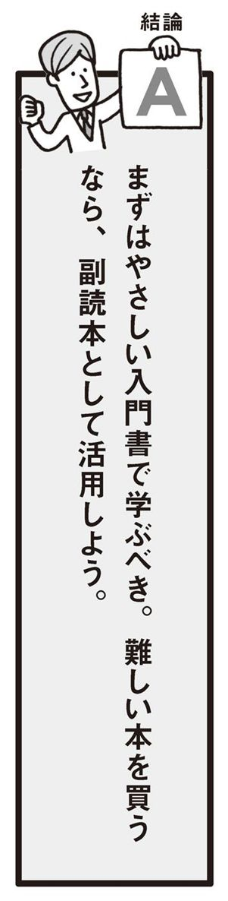
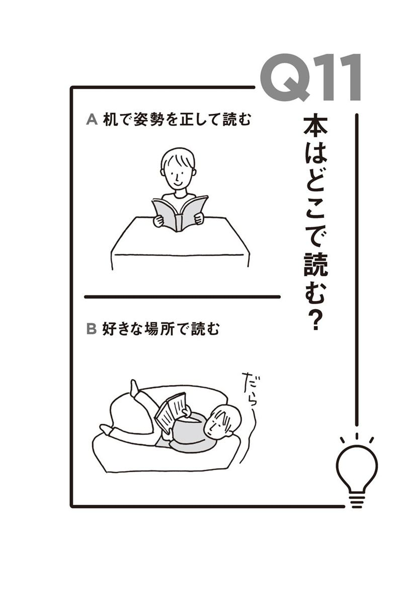
小学校のときに「本を読むときは、机に向かって、ちゃんと背筋を伸ばして、こうやって読みましょう」と教わった人は少なくないでしょう。せっかく買った本ですから、きちんと集中して読んで、できるだけ内容が頭に入るようにしたいものです。
また、ついついリビングのソファに寝転がって読んでしまう......と罪悪感を抱く人もいることでしょう。勉強しているように見えなかったり、テレビなどの雑音で集中できなかったりすることが原因かもしれません。
集中できる場所を探そう
高校を卒業した後は、大学生のときも、社会人になってからも、勉強のためにわざわざ机を用意することはなくなったという高原さん。本を読むにしても、座椅子で膝を抱えながら読むこともあるそうです。机に向かって読むのが一番集中できるという人であれば、机を用意すればいいし、それがしっくりこないなら、自分にとって最適の方法を探した方がよいという意見です。
バスや電車の中で本を読む人は多いですが、小説でも専門書でも、本を読むときには外を歩きながら、という人もいます。波野さんは乗り物が苦手。本を読んでいるとすぐに酔ってしまいます。あるとき、乗り物に酔ってしまい、途中で降りて歩き始めました。酔いが治まり「もしかして」と思って、本を読みながら歩いてみると、内容が意外とすんなり頭に入ってきたそうです。
ちょっと読んでは顔を上げて、ということを繰り返しながらだと、難しい本であっても、歩きながら考えることで自分の中で噛み砕くことができるとか。もちろん、往来の激しい道では本は閉じたままにしているということを付け加えておきます。
原田さんのように歩きながら読むというのは、第３章Ｑ17でも触れますが、脳への刺激にもつながりますので、室内をぐるぐる回りながら読むことで、より記憶として定着させることも期待できます。
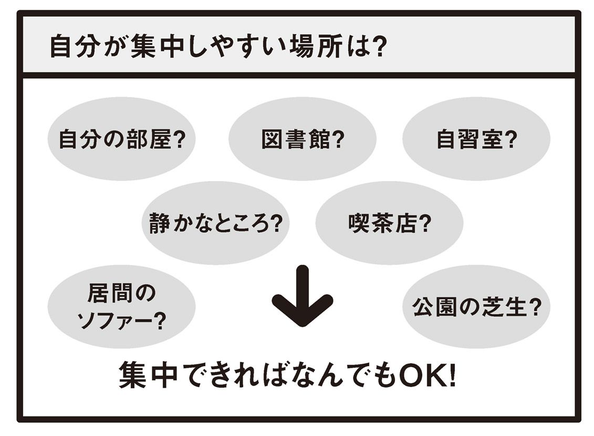
「スイッチ」のありかを知ろう
自分の家ではなかなか集中できないから、図書館や自習室を利用するという人もいるでしょう。しかし、原子さんは静か過ぎる環境では本を読めないそうです。
「川のせせらぎの音や雨の音が入ったＣＤをかけて勉強する人もいるけど、僕は普通に音楽やラジオをかけて環境音にしている」（原子さん）
さらには「歌いながら本を読んでいた。ラジオから聞こえてくる曲は何でも歌っていた」（高原さん）というツワモノも。
このように、人によって、どんな環境が一番集中できるかには、大きな違いがあります。「こうしたら集中できる」、あるいは「こうしたら集中力を保つために頑張る」という「スイッチ」を見つけ、その環境を用意することが勉強にとっては肝心です。ですから、横たわって本を広げることが集中の「スイッチ」だという人は、それを無理に矯正する必要はないわけです。
こんな読み方には注意
本は自分が集中できる場所で読むべきですが、注意点があります。
たとえば、本が目に近すぎる場合。うつぶせに寝っ転がって本を読むときに、本を地面に置いていると、本と目の距離がかなり近い状態になります。近くにピントを合わせた状態を続けると、目にストレスがかかり、眼精疲労や肩こりの原因にもなります。「うつぶせが最高に集中できると思っていたら、腰痛持ちになってしまった」（有働さん）という人もいますので、うつぶせでの長時間の読書はあまりおすすめできません。
また、寝る前に部屋を暗くしてから、読書灯で本を読む人もいるでしょう。暗いところでの読書は目の疲れや肩こりの原因となりますので、十分な明るさを確保しましょう。
さらに、寝る前に読むなら、本の内容にも気をつけたいところ。第５章Ｑ26でも触れますが、睡眠時間の確保はとても大切なことです。いざ寝ようというときに、読書をしたせいで目がさえてしまったとか、内容について考えてしまって眠れなくなったことはありませんか？ 寝る前に本を読むのであれば、リラックスできて入眠を促すものにしましょう。
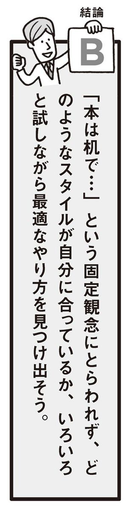
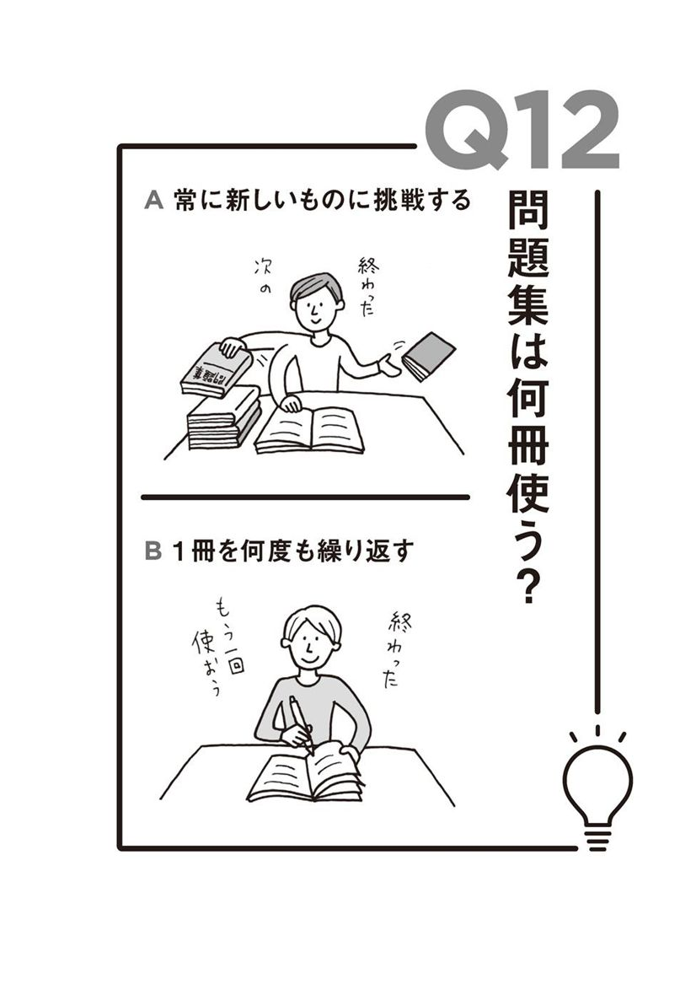
教科書や参考書を読んだあとは、問題集に挑戦し、知識の定着を図るのが効率的に勉強を進めるコツです。そのときに使用する問題集はどのように選べばいいでしょうか。たくさんの問題を解いたほうが勉強になりそうな気がしますが、手当たりしだいに参考書を買うのがいいのでしょうか。
数をこなすよりもまずは質
仁野さんは、解説がしっかりしているものを選べば、問題集は１冊で十分だと主張します。問題は解ければそれで終わり、というわけではなく、考え方は間違っていたが、たまたま正解していたということや、もっといい解き方があって、そちらを使うとより短い時間で済むこともあります。ですから、解説を読んで、自分の解き方がどうだったのかをしっかり検討していると、それだけで十分な力がつきます。
じっくり解説を読むのは、それなりに時間もかかります。「何冊も問題集を解かなきゃいけない」と思っていると、焦ってしまってうまくいかないものです。
わからない問題に繰り返し挑戦するだけではなく、うまくできたと思った問題でも、きちんと検討することで、より実力を付けることが可能です。
しかし、解説を読んで理解したあとにすぐにやり直すと、書いてあったことを記憶してしまっているので、本当に理解できているかの確認になりません。忘れた頃にやってみて、ちゃんと正解できるかどうかを確かめるようにしましょう。
とはいえ、同じ問題集ばかりを使っていると、飽きてしまうかもしれません。そんな人は網野さんのやり方が参考になりそうです。網野さんは高校生の頃、古本屋でたくさんの問題集を立ち読みして、面白そうなものを買ったそうです。普段使っている問題集にマンネリを感じたときは、気分転換に別の問題集を解くという具合です。
また、１冊の問題集をマスターしたあとには、効率よく他の問題が解けるようになると多くのメンバーが指摘しています。きちんと力がつく前に何冊もの問題集を相手にすると、かえって非効率になってしまうのです。
ビジネスにおいてはケーススタディを重視
ビジネスに関していえば、ケーススタディが充実した本が受験でいう問題集に該当します。仕事でトラブルが起こったときの対処法や、事業方針の立て方などは、勉強の積み重ねで身に付けることができます。「『自分がこんな場面に出くわしたらどうするか』を考えながら読むのがコツ」（大谷さん）です。
自分の考えと、書いてある解決の仕方と比べることで、問題集を解くのと同じ効果が得られるということです。ただし、新しい本を次々と読むだけでは、知識が自分の血肉になりません。「これは」と思った本をじっくりと読み、定期的に読み返すと効果的です。
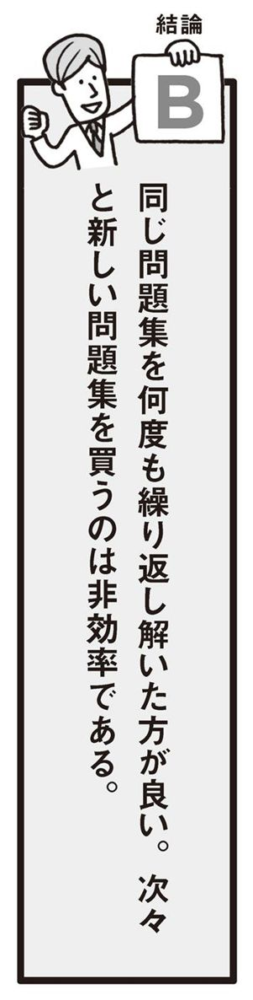
「読みながら、大事だと思ったところに線を引きなさい」と、学校で教わりませんでしたか？ あるいは、鉛筆を持たずに教科書を見ていたら、「そんなことではだめだ」と注意されたことがある人もいるかもしれません。
他方で、本に線を引くことに抵抗がある人もいるでしょう。買ったものは、きれいなままで取っておきたいと考えるのは、おかしいことではありません。
本を買ったなら、その本を隅から隅まで活用したいものです。そのためには本をどう使うのがいいのでしょうか。
「教科書」は内容の全てが大事
多くの人が特に疑うことなしに実践している「線を引く」という行為ですが、その本が自分にとって、「教科書」のようなものである場合、線を引くことがマイナスになることもあります。
というのも、線を引いたとき、線を引いていないほかの箇所と区別をつけることになります。１冊を丸ごと知識として吸収したい、マスターしたいというのであれば、その区別により、線を引いていない部分がこぼれ落ちてしまうこともあるのです。
また、「線を引いたら覚えたような気になるのもよくない」（大地さん）というような意見もあります。
線を引くのが非常に有効な場面は確かにあります。たとえば現代文の長文問題に挑むとき。時間内に何度も問題文を読み返すような時間はありませんから、筆者の考えがはっきりと表れているような箇所に線を引くことで、問題を解くのに必要になる重要な部分を目立たせることは有効です。
「この本のここの部分だけは覚えておこう」というようなときには線を引くのは有効ですが、そのデメリットを意識していないと、線を引いたままで満足して終わりということに陥りやすいのです。
書き込みはどんどんするべき
だからといって、本をきれいに使う、というのは少し違います。本を読むというのは、単に文字を追っていればいいわけではありません。それは「受け身」の読書です。何度も読み返したいという本であれば、むしろどんどん書き込みをするべきなのです。書き込みをすることで、受け身の読書ではなく、頭を使う読書ができます。
書き込む内容を限定する必要はありません。読んで気になったこと、自分で考えたこと、別の本に書いてあった興味深いことなど、何でも構いません。
何度も読み返しているうちに、わからなかったことが解決することもあります。そんなときは昔に書いた「ここがよくわからない」という書き込みに「◯年△月 ようやく理解できた！ ここは△△という意味」などと書き加えてみましょう。
それはただの本ではなく、自分の成長記録になります。
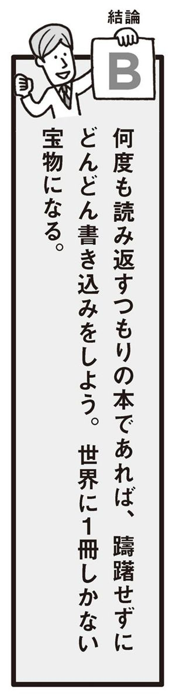
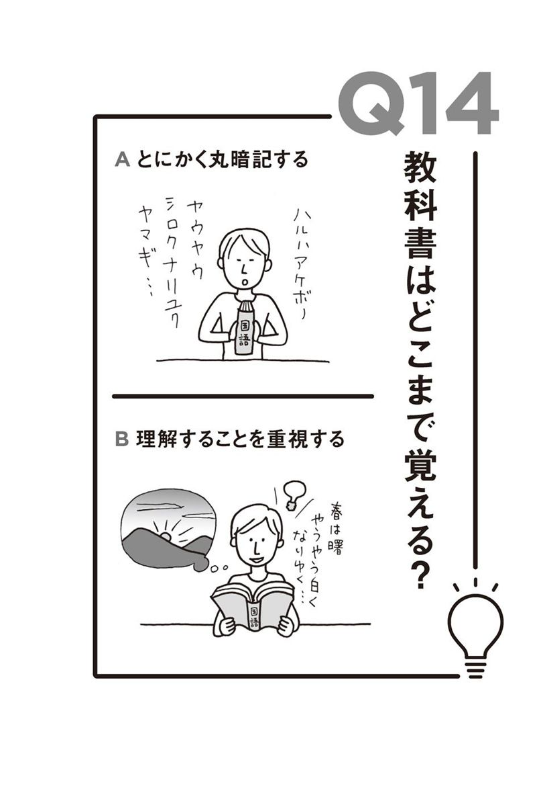
学生の頃、新しい教科書を前に頑張るぞと決意を新たにした人もいれば、まだまだこんなに勉強することがあるのか、と暗い気持ちになった人もいるでしょう。
勉強の基礎になる教科書を入手したら、その内容を全部覚えたほうがいいのでしょうか。それとも重要な部分だけ抜き出して覚えるのがいいのでしょうか。
教科書は要約のかたまり
そもそも教科書は、その科目をマスターするために、知っておくべきことが書かれているもの。重要な事柄を網羅していますから、読み込むことで、十分な知識が得られるように工夫されています。言ってみれば、要約のかたまりが教科書といえます。
そのため、教科書に書いてあることのうち、「覚えるべき内容と、それ以外を明確に分けられるならいいが、そうじゃないからやっかいだ」（片野さん）というように、教科書の内容をさらに取捨選択することはとても難しいのです。
そうすると、「教科書に書いてあることは全部覚えよう」ということになるのですが、その意味を取り違えると大変なことになります。
中学生になって本格的な英語の授業が始まったことがとてもうれしかった仁野さん。英語の教科書に載っている英文は全部覚えたそうです。しかし、振り返ってみると「音として覚えただけで、英文の構造を意識できていたわけではない」と言います。時間効率を考えると、果たして有効だったのかどうか疑問です。
つまり、覚えるべきはエッセンスであって、一言一句を間違えずに覚えよう、ということではありません。
教科書に書いてある内容を覚えるのは、問題を解いたり、さらに新しい知識を吸収したりする土台にするため。「覚えるために覚える」というように、目的を見失った状態でひたすら暗記するというのは、そこから先へつながりません。
繰り返し読んで、「流れ」をつかもう
歴史教科は覚えることがいっぱいあって苦手だったけど、数学は公式さえ覚えておけばよかったから楽だった。そんなふうに考えている人もいるかもしれませんが、その考え方には大きな落とし穴が。
「数学の公式をどうやって導き出すのかを理解しておかないと、応用問題ではすぐに歯が立たなくなる」（秋野さん）
「各要素を暗記するだけでは意味がなく、縦・横のつながりを意識して覚えるべき」（魚井さん）
このように、教科書に書いてあるたくさんの重要なことをとにかく暗記しようとするのは避けるべきです。きちんと理解して頭の中に入れるには、つながりを意識することが大事です。そのためには繰り返し読み込んで、「流れ」をつかむことが必要です。
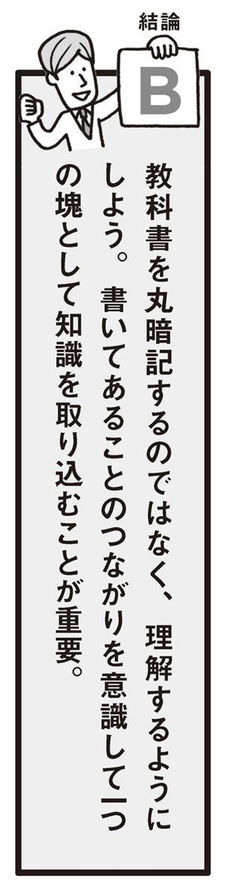
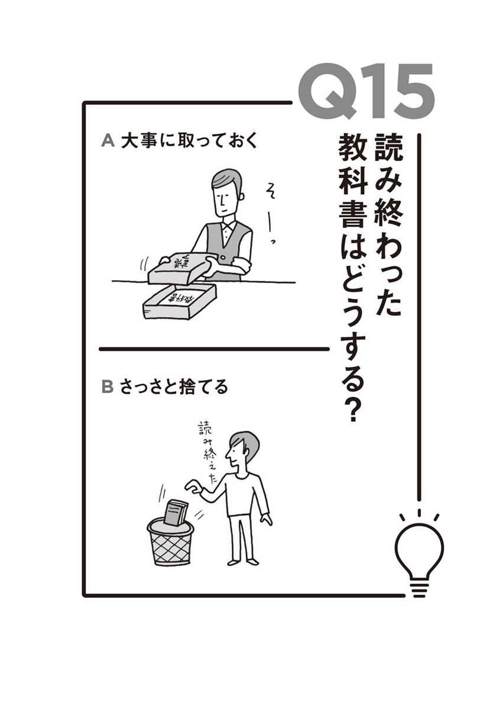
勉強をしているうちに、少しずつ増えていく本の山。たくさんの教科書、参考書、資料は頑張って勉強した証拠でもあるので、大切に取っておきたいという人もいるはず。だけど、部屋の都合でそうもいかない。そんなときはどうすればいいでしょうか。
本棚を見るだけでやるべきことがわかる
「そういえばあの本、どこにやったかな」と探しても、なくしてしまって見つからない。そんな本はもともと出番の少ない本ですから、捨ててしまっても困ることはほとんどないでしょう。
むしろ、十分理解できたと思ったものはどんどん捨ててしまうことをおすすめします。今自分が取り組んでいるもの、まだ理解できていないものだけを手元に残すことにするのです。積まれている本を見れば、やるべき勉強・やりたい勉強が、どれだけ残っているかがはっきりしますよね。
本自体が好きな人は、本に囲まれていることで幸せを感じます。本を捨てることにかなりの抵抗があるかもしれません。しかし、勉強においては本に囲まれていることが必ずしもよいこととは言えません。
原田さんは「机の上や本棚を整理しておくことは、自分が何に集中すべきかはっきりさせることにつながる」と考えています。以前は仕事で使ったほとんど読み返さない資料なども取っておいたのですが、ごちゃごちゃと机の周りに山積みになっていました。あるとき、それが甘えにつながると思い、大部分を処分しました。「いつか使うかも」ということなら、きちんと整理しておけばいいし、本当に重要なことであれば、資料がなくても頭の中に入っていて当然だ、という考え方です。
理解できたものは捨ててしまうことで、勉強の進み具合や目標が明確になります。また、「まだよくわからないけど、いつかちゃんと読み返そう」というように、ずるずると先送りにしてしまうことを避けることもできるのです。
残すのは教科書と「魔法のアイテム」
十分に理解した教科書はどんどん捨てるべきですが、例外もあります。それは、第３章Ｑ13で述べたような、自分の考えなどを書き込んだ教科書もその一つ。勉強を進めるための指針となるものですし、自分の成長記録は勉強の喜びにもつながります。だいたいは理解できたけど、ちょっとだけ気になる部分が残っているというような本は、その部分だけ抜き出して教科書にメモしておけば、あとは不要です。教科書をより充実させたうえで、処分してしまいましょう。
ある分野に関して初めて買った本なども、手元に残しておくといいでしょう。そんな本はパラパラめくるだけでやる気も出てくる「魔法のアイテム」。原田さんも、初期の情熱を思い出させてくれるような本は大事に取ってあります。読み返すことはなくても、本棚の目立つところに置いて、頻繁に目に入るようにしているのです。
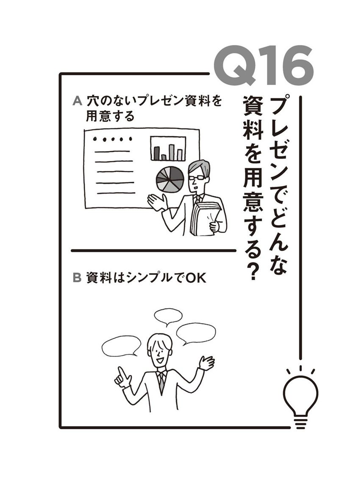
あなたは好きな人に告白するとき、どんなふうに好意を伝えますか。だいたいの人は情熱的に、なぜ好きになったのか、相手がどんなに素敵かということを話すのではないでしょうか。逆に、「私と付き合うと、具体的にこういういいことがあるよ」。そんなふうに告白する人は少数派でしょう。
ビジネスにおけるプレゼンと告白が似ていると感じる人はいるでしょう。しかし、告白のように情熱的に迫るだけでは、なかなか相手を口説き落とせないものです。
「プレゼンの相手」の背後には......
あなたがＡ社のＢさんを相手にプレゼンをするとします。徹底的にしゃべりたいことをしゃべるだけで、「すばらしい。ぜひ一緒にやりましょう」とＢさんがあなたの熱に感化される可能性はゼロではないでしょう。しかし、それですべてがうまくいくかというと、たいていの場合はそうもいきません。というのも、プレゼンの場ですべての決着がつくわけではないからです。
多くの場合、あなたがプレゼンをしたＢさんは会社に帰ったあと、あなたが説明したことを、今度はＡ社の同僚たちに説明する必要があります。情熱というのは、人を介するほど伝わりにくくなるもの。Ｂさんから後日、「あなたの熱意はすばらしかったのですが、会社のほかの人には理解してもらえませんでした」というメールが届くのがオチです。
情熱を支援する資料を用意しよう
そこで重要になるのが、論理的に穴のないプレゼン資料です。取りこぼしのない資料を用意するとなると、準備も大変ですし、その量は結構なものになるでしょう。その内容のすべてをＢさんに説明していると、とても時間がかかって、どこがセールスポイントなのかがぼやけてしまう危険性もあります。
ですから、対面で話すＢさんに対しては資料のすべてを説明する必要はありません。Ｂさんには、あくまでも骨子の部分、そして「ぜひともやりたい」という熱意を語れば十分です。
「あとのことはこの資料に書いておきました。さらに不明な点があればいつでもご連絡ください」と伝えてプレゼンを終わりましょう。
その資料が本領を発揮するのは、ＢさんがＡ社に戻ってから。一緒に仕事に取り組むことで、どのようなメリットがあるのか、どんなリスクがあって、それを回避する具体的な方法はどういうものなのか。それらがプレゼン資料にきっちりと書いてあれば、Ａ社の人たちも安心できます。
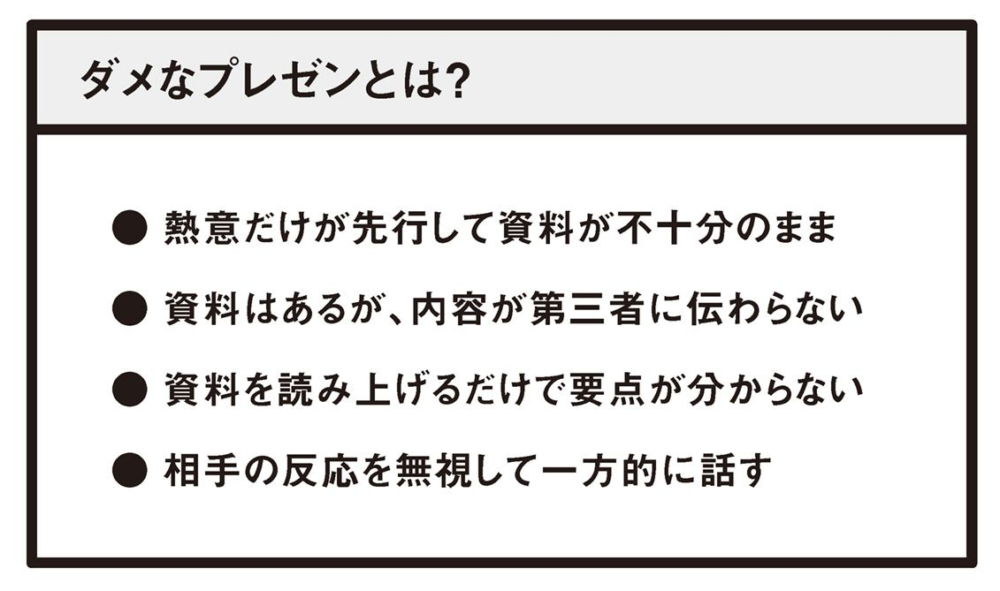
ここまで見ると、プレゼンは告白ではなくて、親御さんへのご挨拶のほうが近いといえそうですね。直接会って話す機会のないような人に、「この人、本当に大丈夫なの？」と思わせないような、理解を深めてくれるような資料を作っておくことの重要性はわかっていただけたでしょうか。
穴のないプレゼン資料をつくるときの注意点
穴のないプレゼン資料作成は必ず必要ですが、注意すべきことがあります。絶対に失敗したくないという気持ちが強まり、完璧なプレゼンをしようとすると、多くの人が陥りやすい落とし穴があります。
それは、プレゼン資料だけでなく、読み上げるための「原稿」まできっちりと用意してしまうことです。「え、なぜダメなの？」と疑問に思う人がいるでしょう。その理由は３つあります。
１つ目は、プレゼンは自分の想定通り進まないこと。
２つ目は、相手の反応によって進め方を変えたほうが効果的だということ。たとえば、相手から質問があって、先のほうのスライドまで飛ばして、別の話をしなければいけないこともあります。コンペのように、複数の人が一緒にプレゼンをするような場合は、相手との差別化を考えて、相手よりも優れているところをより重点的に説明するべきです。また、相手の反応がよくないときには、思いきって話の順番を入れ替えるなどの工夫をする必要もあるでしょう。
そして、３つ目は、原稿があると目線を手元に落としてしまいがちだということです。先ほど、下を向いて原稿を見ていると、熱意が相手に届きません。
ですから、完璧に用意された原稿は、かえってじゃまになりがちです。要点を忘れないためのメモが手元にあれば十分なのです。
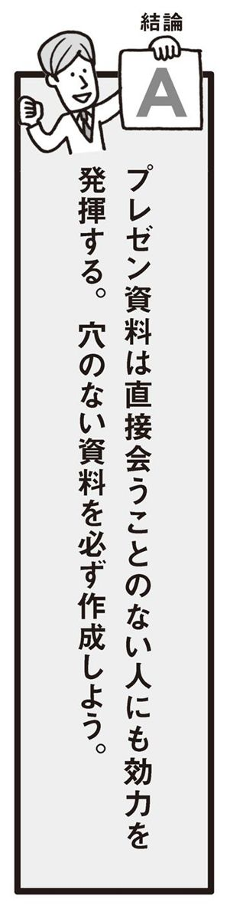
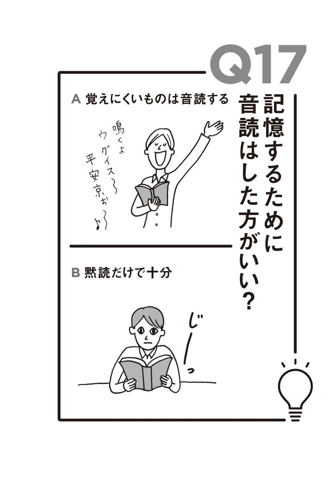
基本的に「読む」という行為は、視覚によって得られる文字情報を脳にインプットするものですが、音読ではこれに聴覚からの情報が加わります。
黙読は自分のペースで自由に流し読みなどがしやすい一方、読んだ内容が頭に残りにくいと感じる人もいるのではないでしょうか。
逆に音読は読み上げるのに時間がかかっても、視覚に加えて聴覚を刺激するため、記憶に残りやすいはずだという人もいるはずです。勉強するときには、どちらのやり方を選択するべきなのでしょうか。
大学受験ではどうしても単語や年号などを覚える単調な作業が多くなりがちです。そんな中、秋野さんは受験生時代から音読を積極的に取り入れていました。
「英単語や古文単語などの暗記事項は必ず音読した。入試の半年前くらいからは声に出すだけでなく、部屋の中を歩き回るようにもなった」
秋野さんにとっては、目も耳も体全体も使って、複数の刺激とともに頭に入れるというやり方が合っていたようです。
また、受験生時代には音読など一切せず、大学に入ってからも、音読はした覚えがないという大谷さんも、ここ何年かで考えが変わってきたといいます。
「年を取るに連れて、物を覚える際、自分でも気が付かないうちに自然と声が出るようになった。鈍ってきた頭の働きをカバーしようとしているのかもしれない」
大谷さんの場合も、無意識ではありますが、音読により脳に与える刺激を増やすことで記憶力を増強しているようです。
脳により多くの刺激を与えたほうが、暗記効果はアップします。歩き回りながら覚えた秋野さんの場合は、視覚と聴覚だけでなく、体全体を使うことでさらに多くの刺激を脳へ送っていたことになります。
ということで、暗記が苦手で苦労しているという人は、ぜひとも音読を取り入れて脳への刺激を増やしてみましょう。
それでもなかなか覚えられないというなら、ノートに同じ単語を何度も書いたり、覚える内容を録音して通勤・通学の途中で繰り返し聞いたりと、五感を活用すると効果が出ます。
音読が邪魔になるケースもある
ただし、何でもかんでも声に出しさえすればいいというのも少し違うようです。
細川さんは音読のコツを「理解しながら声に出す」ことであると考えています。少し前に流行した、聞き流すだけで英語が話せるようになるという教材を使ってみたものの、細川さんは英語能力の上昇を実感できませんでした。
「理解していないものをいくら聞いても、記憶には残りづらい。頭を使わず、本当の意味で聞き流しているだけだったら、能力が身に付くかは疑問だ」（細川さん）
なるほど、まったく知らない外国語を聞いたときに、その音を真似ることはできるかもしれませんが、意味を理解しなければ会話ができるようにはなりません。
留学すると語学が上達するのは、コミュニケーションを取るために一生懸命に頭を使いながら努力をしているから、というのが細川さんの見解です。
ここで紹介したのは英語を聞き流す例ですが、他の科目の勉強に音読を取り入れる場合にも、内容を理解したうえで、意味を考えて声に出さないと、効果は薄くなってしまいます。
また高原さんは、「複雑な思考が求められる勉強や作業に取り組む際には、黙ってひたすら目の前の文面とにらめっこしなければならないときもある」と主張します。単純な暗記などではない複雑な思考が要求される場面においては、音読がかえって作業の妨げになることもあるのです。
音読が逆効果になる例としては、文章の内容要約があるでしょう。記憶ではなく思考が求められる局面では、音読から得られる情報は作業を妨害するノイズになってしまうのです。
ということで、音読が効果を発揮するのは「自分がある程度理解していること」を記憶したい場合といえます。
逆に、自分の中でまだ十分に理解の及んでいない事柄を勉強する際や、集中して思考する際には、声に出して読むことが学習のプラスにはならない場合もあります。状況に応じて、音読すべきケースと、そうでないケースをうまく見分けることが重要といえそうです。
黙読を極めれば速読で超速勉強も
音読が暗記に力を発揮するのはこれまで見てきたとおりですが、黙読には別の力があります。
音読と黙読は読むスピードが違います。学校の授業で、国語の教科書を音読したときのことを思い出してみましょう。目で追うだけのときよりも、声に出して読むときのほうが時間がかかっていたはずです。英語に慣れていない人が英文を読むスピードが遅い理由の一つは、「英文を頭の中で音読しているから」ともいわれており、頭の中で音読をしない癖をつけると、読むスピードが格段に上がるとされています。
実は黙読を極めることで、速読を身につけることができるのです。
速読の訓練として今野さんがすすめるのが朝刊の一気読みです。最初の頃は20分ぐらいで全ページに目を通すことを心がけ、慣れてきたら徐々にスピードを上げていった結果、今では10分ほどで紙面を読みつくすことができるそうです。
このとき「おっ」と思ったトピックはあとでもう一度じっくり読みますが、昨日、世の中でどんなことが起こったのかを全体としてすばやく把握できるようになったということです。
この習慣が身に付くまでは、職場の昼休みの大部分を、新聞を読むことに費やしていたという今野さん。今は新聞速読術を駆使することで、本当に役に立つ情報だけを短時間で頭に入れ、余った時間はのんびり過ごしています。
ネットなどで漫然とニュースをチェックしていると、ついつい関係のないところまで読んでしまい、気付けばとんでもない時間がたっている、そんな経験をした人も多いでしょう。今野さんは新聞を読んでもわからないことに関してだけ、ネットで情報収集をしたり、新しく本を買って読んだりするようになったそうです。
本や文章を読むことで、自分が何を得ようとしているのか、ということも、声に出すか出さないかを考える重要なポイントだといえるでしょう。
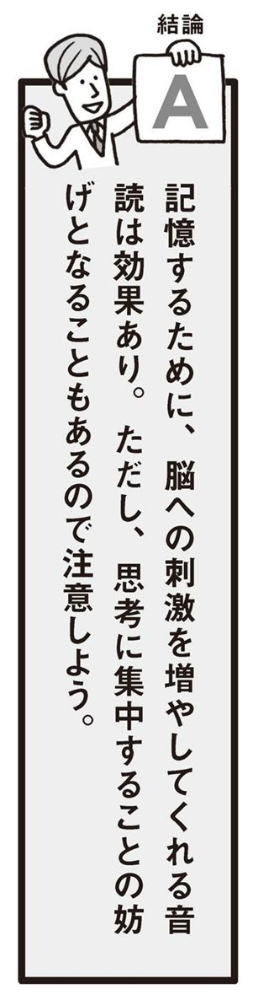
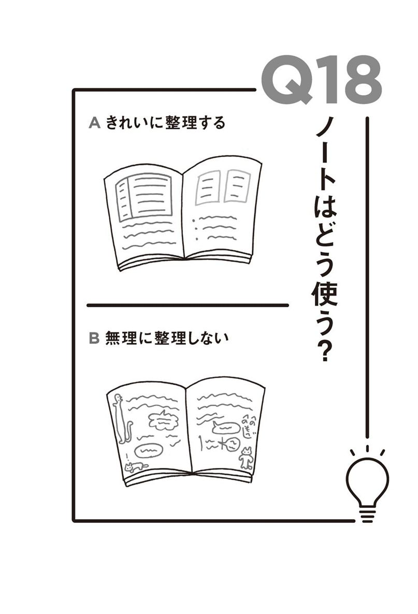
どのようなノートが「いいノート」なのか、どういうときにノートをとるべきかという問いは、簡単に答えが出るものではなく、ノートのまとめ方に関する本は何冊も出版されています。
教師と生徒の間でノートの捉え方に違いがあると、問題になることもあります。学校の授業中、板書をノートに書き写していなくて、授業態度がよくないと言われたことはありませんか？ もしくは、自分なりに工夫してノートを書いたつもりなのに、「こんなぐちゃぐちゃなノートではだめだ」と指摘されたことはないでしょうか。
きれいなノートは使えるノート？
勉強法研究会の中では、板書をそのまま書き写したという人は少数派でした。ただし、まったくノートをとらなかったという人はいません。
板書をそのままで写すのではなく、自分が理解しやすい言葉に直して整理して書いていたという人もいれば、「先生が、教科書に書かれていないことをしゃべったり、板書したときは、ちゃんとノートに書いた」（仁野さん）という人もいます。
授業では、教科書の解説に加え、教師なりの理解の仕方が紹介されます。「いろいろな理解の仕方を知っておくことは、あとあと問題を解くときに役に立つし、その話を聞いて自分が考えたことも書いておいた」（魚井さん）というように、教科書の内容からはずれた話や、発展した話をノートにとることは重要です。
そして皆に共通した意見が、「あとから見返して意味のわからないノートに価値はない」ということでした。ただし、整理されたきれいなノートでなければいけないというわけではありません。
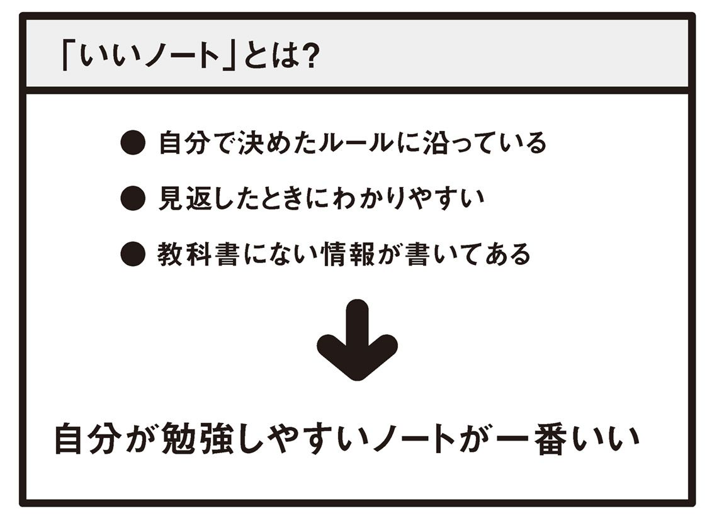
大切なのは「自分がわかる」こと
「人が見て何が書いてあるかわからないようなぐちゃぐちゃなノートでも『自分ルール』にきっちり沿ったものであれば、十分使える」と語る原子さん。あとからいろいろと書き込むことが多かったため、余白を多めに取ろうとすると、罫線や方眼を無視したほうが都合がいいことに気付きました。現在使用しているのは、無地のノート。一見すると、文章が無造作に並べられているだけに見えますが、自分ルールに従って書かれているために、自分が考えたこと、ほかの人の意見、本から引用した箇所などは、本人が見ればすぐにわかります。
きれいに整理されたノートは、見た目がよく、気分がいいものかもしれませんが、それが本当に必要かというと疑問です。
一方で、明確な目的を持って整理したノートを作ったという人もいます。波野さんは授業でとったノートを凝縮して、遠目では黒い紙に見えるほどにびっちり詰めて書き直したノートを作っていました。「一目で多くの情報が入るので、復習にも使いやすい。持ち運びも楽なので、いつもかばんに入れておくこともできる」（波野さん）ために、効率的な勉強に一役買いました。
きれいなこと自体に意味があるのではなく、整理したことで勉強に役立たせることができるなら、そこに労力を割くのも無意味ではないでしょう。
ノート選びに妥協は禁物
原田さんがいつも使っているノートは方眼のＡ５サイズですが、ここにたどり着くまでは紆余曲折があったようです。
最初に使っていた大学ノートは、図を描いたり、文章の構成を考えたりするときに罫線がじゃまになっていました。そこで、次にＢ４の方眼用紙を試しました。サイズが大きいので、窮屈な思いをすることなく使うことができます。しかし、今度は持ち運びが不便になるだけでなく「１ページを使い切るのに時間がかかり、仕事があまり進んでいない気がしてやる気が出ない」という問題も出てきました。
そこで今度は、サイズを一気にダウンして、Ａ５サイズにしてみました。小さいので、ページはどんどん埋まっていきます。しかも、ノートを使い切ると満足感があり、やる気も出てきます。
また、大きいサイズを使っているときは、余白があるともったいないと思い、１つのページに複数のトピックを書き込むこともありました。そのせいで、あとから見返すときに、どのページに何が書いてあるのかがわかりにくくなっていました。１ページに書くのは、１つのテーマだけ、と決めることで、あとから見返すときに効率的になりました。
勉強に使うノートは、一度書いてそれで終わりではありません。効率的な勉強のためには、自分に合ったノートをしっかり選ぶことも重要なのです。
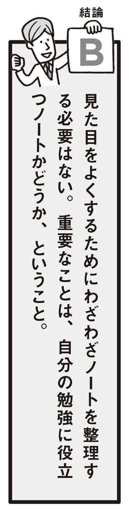
COLUMN
目標は抽象的でない方がいい
周りの人たちが勉強しているから、自分も勉強したほうがいいのかなという気持ちでは、なかなか勉強は続きません。
本を選ぶときには、「その本でどんな知識を得たいのか」という自分の目標をはっきりとさせることが大事です。同じように勉強も「勉強することで自分が何を目指すのか」をはっきりさせることで、やる気にもつながります。
「○○を達成するために勉強が必要だ」といつも意識するようにしましょう。目的や目標を定めるなら「勉強して賢くなりたい」という抽象的なものよりも、「資格を取りたい」とか「昇格試験に合格したい」という具体的なものがいいですし、さらに「資格を取ることで、転職につなげたい」「もっと仕事が面白くなるはずだから、昇格試験に合格したい」と、将来のことにつなげて目標をセットすることで、高いモチベーションを保つことができるようになります。
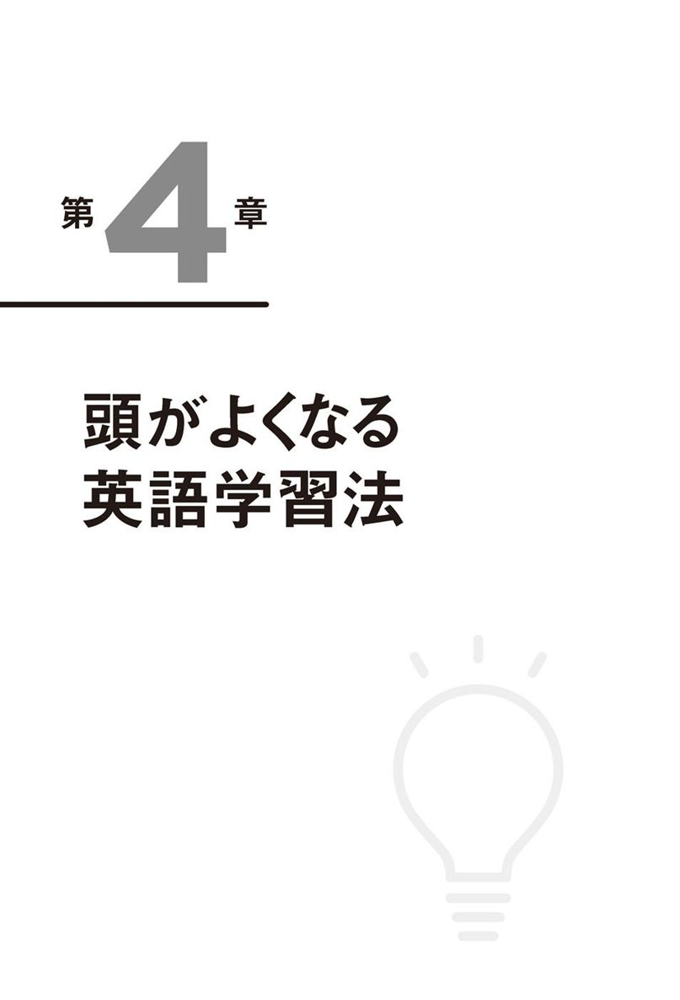
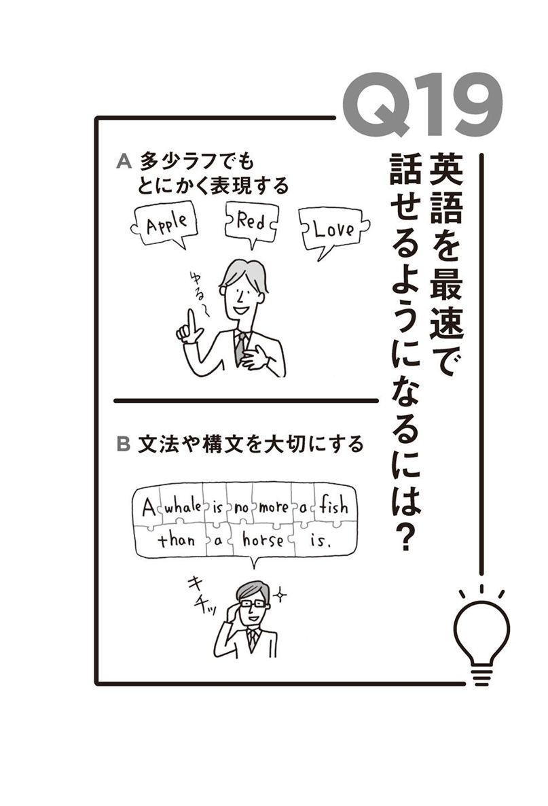
スラスラと英会話ができることを目標に英語の勉強に打ち込む人はたくさんいます。会話ができるようになるには、英単語を覚えて、文法や構文をしっかりと勉強する必要があります。
しかし、一人で勉強するばかりでは、会話の練習はできませんし、自分がどれほどしゃべれるようになっているかもよくわからないままです。
小さな子どもがたどたどしい日本語で一生懸命話そうとするように、正確でなくてもいいから、自分にできる範囲で会話をしてみるというのは重要に思えます。
話す機会はとにかく増やすべき
ラフな英語でもいいからとにかく話すべきだと考えている魚井さん。
「しっかり話せるように準備ができてから話せばいいやと考えていると、いつまでも話せるようにはならない」
文字を見て「この英語はこういう意味だ」とわかればいいリーディングと、字を見ずに耳で聞くだけで理解する必要のある会話は、まったくの別物です。
魚井さんは、実践の機会を増やすべく、外国人のインターンとしょっちゅう会話しています。自分自身がそんなに英語が得意とは思っていませんし、ところどころでミスをしていることもわかっています。それでも、日常会話であれば十分に伝わるものです。
「大きな間違いは向こうも指摘してくれるし、数をこなすことで口も慣れてきて、よりしゃべれるようになってきた」（魚井さん）
やはり、間違いを恐れずに、とにかく英語を口にする機会を増やすことが英会話上達の近道のようです。
文法や構文は大切だが優先すべきは会話
ただし、ラフな状態をいつまでも続けるのは考えものです。
「ビジネスではラフな英語だと信頼されないし、勘違いがとんでもないミスにつながる」という高原さん。ラフではだめというなら、今はまだ英語で会話をすることはないのでしょうか。
「むしろ逆ですよ。信頼されるような英語をしゃべれるようになりたいから、僕は積極的に話しかけるようにしています」
高原さんが一番気を付けているのは「自分はもう英語をマスターしたぞ」と勘違いしてしまうこと。そうなると、それ以上の上達は望めなくなります。自分の英語が未完成であることを受け止めて、文法や構文の勉強も怠りません。
会話で詰まったことや、英語で何と言えばいいかわからなかったことを、高原さんはきちんとメモに残しています。家に帰ってからメモを見返して勉強したり、英語がうまい人にアドバイスをもらったりすることで、さらに磨きをかけているのです。
「英語を勉強している」と相手に伝えよう
そうはいっても、未完成な英語を話したくない人や、全く聞き取れない状態が嫌だという人もいるでしょう。魚井さんも、そんなふうに考えていましたが、あることがきっかけで、積極的に会話ができるようになりました。
「私は今、英語を勉強しているんだ」と伝えれば、相手は話すスピードを落としたり、より簡単な言葉で言い換えたりしてくれるようになったのです。
初対面の人に英語が下手と思われるのが嫌だった魚井さんですが、「勉強中」と伝えることで、そんな思いをすることはなくなりました。むしろ、「あなたと話すことで、英語が上達した」と感謝の気持ちを述べると、相手も喜んでくれますし、英語の学習に関する相談にのってくれるようになったそうです。
また、魚井さんはお互いに英語と日本語のクイズを出し合うこともあるそうです。教え合うことの効果は第２章Ｑ05でも説明したとおりですが、魚井さんは自分が何気なく使っている日本語表現が気になって、日本語の勉強まで始めました。
子どもがいきなり上手な日本語を話すことができないように、英語も突然流暢に話すことは不可能です。「勉強中なのだから下手で当たり前」と開き直ることは、実は大事なことなのです。
英語の上達には、英単語を覚えることは欠かせません。多くの人は英単語を覚えるときには英単語帳を購入することでしょう。
一方で、ひたすら英文を読めば、自然と単語の意味も覚えられますし、英語に慣れることもできて一石二鳥なのでは、という考え方もあるでしょう。単語だけ知っていても、その使い方や、実際にどんな文章が出てくるのかを知らなければ、あまり英語が上達しないようにも思えます。
語彙が少ないと読むスピードが落ちる
「単語だけ覚えている状態では、読むことはできても、英作文となると、どの単語をチョイスすればいいかわからず、なかなかうまくならない」という大地さん。では、英単語帳は使わなかったのかというと、そんなことはありません。大地さんは、例文が豊富な英単語帳を１冊選んで、ひたすら単語を覚えました。
「十分に単語を覚えずに文章を読もうとしても、まったく意味がわからないから、結局辞書を引く必要がある。それでは非効率過ぎます」
単語を覚えるときには、例文も併せて暗記しました。単語だけを覚えるよりもかなり時間はかかりましたが、それでも、いきなり英文を読むよりも効率はよかったはずだと感じています。文脈と併せて覚えることで、どんなときにその言葉を使うのか、使ってはいけないかも理解しました。
このように、たくさんの例文が載っている英単語帳であれば、単語だけでなく、その使い方も覚えることができます。そうやってたくさんの語彙を身に付ければ、文章を読む効率が上がりますので、より多くの英文を読むことが可能になり、英語はますます上達します。
１冊の単語帳を使い込もう
英単語帳は何冊も必要ありません。「これはいい」と思った英単語帳を選んで、その１冊をじっくりと使い込むようにしましょう。
繰り返し読んでいる本は、紙がだんだん柔らかくなり、ふにゃふにゃした感じが出てきます。大地さんが通っていた予備校の先生は、この状態を「ふかふか」と形容していました。
「その講師は英単語帳は『ふかふか』になって初めて意味があると言っていた。それを信じて、ふかふかにすべくひたすら英単語帳を使った」（大地さん）
そうすると、なかなか覚えられず何度も確認した単語が、ページ全体のイメージと一緒に思い出せるようになってきたそうです。「この単語はページの真ん中ぐらいに載っていて、よく確認するから星のマークを書いていたな。その次はあの単語だったはず」というように、映像として記憶に残るほどに英単語帳を使うことができれば、相当な成果が得られるはずです。
暗記カードの賢い使い方
単語を覚えるときに暗記カードを使っている人もいるでしょう。ポケットに入れておけば、ちょっとした時間に見返すことができて便利ですよね。このとき、多くの人が、表に英単語を書いて、裏に意味を書くというやり方を採用しているのではないでしょうか。
しかし、もっと効率のいい使い方があります。
英単語を覚えるコツは原田さんが語るように例文も一緒に覚えること。ですから、暗記カードの表に英単語を書いて、裏には例文を書いてしまいましょう。例文が長いときには、その一部でも構いません。ただし、日本語訳は書きません。
「それじゃあ英単語の意味がわからないじゃないか」と思う人もいるかもしれませんが、問題ありません。裏の例文を見れば大体の意味はわかります。表と裏を何度も行き来することで、効率よく、例文ごと単語を記憶することができます。
また、単語の意味を覚えるよりも、その例文がどんな意味だったか、どんな内容だったかを思い出すほうが簡単です。たとえば、学校の古文の授業で読んだことがある文章であれば、単語の意味はわからなくても、どんな話だったかはおぼろげでも思い出せるのではないでしょうか。
さらに、英単語帳を書き写して、単語１つにつき、カードを１枚使うという方法ではなく、問題を解いていて、意味が取れなかった単語を表に、文章を裏に書くという発展形もあります。
そうすると、単語帳で覚える以上に、複数の意味を持つ英単語や、連語、熟語になったときに意外な意味になる単語も効率的に覚えられます。
自分の英語がおかしくないかを誰かに指摘してもらいたいときには、どんな人に助けを求めるのがいいのでしょうか。
もちろんネイティブの人に聞いてもらえば、おかしいところはすぐにわかるはずです。ただ、その指摘を英語でされるとなると、ちょっと大変かもしれません。
日本人に聞いてもらうのはどうでしょう。英語がわかる人であれば間違いを指摘したうえで、丁寧に教えてくれそうです。
英語の発音が日本人には聞き分けられない
日本人にとって「Ｌ」と「Ｒ」の違いは、発音するのも、聞き取るのも難しいものです。英語にはもともと日本語にない発音もあります。ですから日本人の耳で聞き取りやすい英語が、必ずしもネイティブにとっても聞き取りやすいものではないのです。
「学会では日本人の英語は聞き取りやすいという日本人がいるが、話しているのが日本人で、それを聞いているのも日本人なのでそう思うだけかもしれない」と語る仁野さん。
英語を読むときに、カタカナで読みを書く「カタカナ英語」といわれる発音も日本人が英語を間違えて発音する要因の一つとなっています。そういった環境で育った日本人は少なくありません。とても流暢に英語を話すことができる日本人なら別ですが、通常は日本人に英語の発音の良し悪しを判断することができるかは疑わしいです。
文化の違いや用法もネイティブに軍配
発音だけではありません。ネイティブと一緒に仕事をしている魚井さんは、ネイティブなら文化の違いや言葉の多様な意味やニュアンスなどを教えてもらう機会があると言います。文化や価値観の相違に気付かされることがあるだけでなく、よく使う単語に想像もつかないような意味があることを教えてくれるので、家に帰ってから辞書を引きたくなることもしばしばだとか。
もちろん、日本語があまりわからないネイティブの人と話すことは、それなりに困難があります。
「ネイティブと話をして、全然意思疎通できずに心が折れた。特に、日本語ですら伝えるのが難しい込み入った話は大変だ」（秋野さん）というように、ハードルが高いのは間違いありません。そんなときは、日本語のわかる人に頼らざるを得ませんが、きちんとしたフィードバックを得られるかというと限界があるかもしれません。
ネイティブで、なおかつ日本語もわかる人が身近にいれば最高の環境ですが、なかなかそうもいきません。ですから、ネイティブと会話し、たくさんのフィードバックをもらう姿勢が必要といえるでしょう。
テレビＣＭや電車内の広告には、英会話塾がしばしば登場します。講師と一対一での授業は、逃げ場もないので、おのずと英会話が上達しそうに思えます。
しかし、日常生活を考えてみたときに、私たちは一対一の会話ばかりしているわけではありません。むしろ何人かでおしゃべりをしたり、たくさんの人を前に会議で話したりすることのほうが多いのではないでしょうか。
とすると、英語をしゃべる人が多く集まるような場所、たとえば外国人の多いバーに出かけていき、積極的に話すほうが、会話力が身につきそうな気もします。
「みんなでおしゃべり」は超ハイレベル
「効率的に勉強するなら、やっぱり塾に通うのが一番ですよ」という大谷さん。時間的・金銭的余裕があるなら、英会話教育のノウハツを持った講師とマンツーマンで会話を繰り返すのが一番の近道になると感じています。
大谷さんには、以前友人に連れられてスポーツバーに行ったとき、複数の外国人が一度に英語で話しているのが、まったく聞き取れなかったという経験があります。
「リスニングに多少の自信はあったけど、そのぐらいでは何人かのグループで会話することは不可能だと思い知った」
一対一での会話とグループでのおしゃべりの間には相当な違いがあります。たくさんの人と英語の会話で一緒に盛り上がりたいと思っていても、いきなりそこを目指すと非効率になってしまうのです。
「変な英語」を身につけるのは避けよう
「ときどきは盛り場に出かけて、酔っ払って冗談を飛ばしまくる外国人と話すことはモチベーションの維持にはなるかも」と話す網野さん。確かに「これだけ会話ができるようになった」という確認をすることは可能ですが、同時に「変なクセがつかないように注意したほうがいい」とのこと。
みんなでわいわい盛り上がっている場で、なんとか英語で話せたとしても、言葉の使い方が間違っていたり、実は相手を怒らせかねないような表現を使っていたりすることもあるかもしれません。そんなときも、相手は先生ではありませんから、いちいち指摘してはくれないでしょう。
ビジネスで英語を使うということが一番の目的だというなら、フォーマルな表現をきちんと押さえておくに越したことはありません。何のために英語の勉強をするかということを考えると、やはり塾のほうが有利そうです。
また、「ちょっとおしゃれなジョークを英語で言おうと思えば、そのための勉強だって必要になります」（網野さん）という意見も。日本語のジョークをそのまま英訳しても、相手には通じません。一足飛びでいきなりわいわい楽しみたいというのは難しいのです。
論説文や随筆を読むことで日本語の読解力が上がるように、英語の硬い内容の文章を読めば、英語の読解力が上がるはず。
でも、そもそも英語である、というだけでハードルが高いのに、さらに高度な内容の文となると、なかなか大変そうです。
もっと気軽に親しむことができそうな英文、たとえば小説や洋楽などを楽しむことで英語の読解力を向上させることはできないのでしょうか。
最初のきっかけとしてはいいが......
中学校の英語の授業で、教師の指導のもと、ビートルズの歌をクラス全員で歌った経験を持つ有働さん。
「英語に苦手意識を感じていたけど、みんなで大きな声で歌うのは楽しかったし、おかげで頑張ってみようと思えた」
では、有働さんは今も洋楽で英語の勉強をしているかというと、そんなことはありません。カラオケで洋楽を歌うことはあっても、勉強するときには英語の本や雑誌を読んでいます。
邦楽の歌詞と一緒で、洋楽の歌詞もそれほど難しい表現は出てきません。歌独特の言い回しなどはありますが、そういった特有の言い回しばかりを身につけても、読解力の向上は見込めません。
「英語に触れる最初のきっかけとしては洋楽は悪くないけど、しっかりした文章を読まない限りは上達はないですね」（有働さん）
基礎になるのはやはり例文集
同じように、小説を読むというのも、読解力と直結するとはいえなさそうです。
中学一年生の頃、大流行していた『ハリーポッター』の小説を買った仁野さん。児童向け文学の『ハリーポッター』なら、楽しんで読めるに違いないと思っていましたが、大きな誤算がありました。
「児童向けとはいっても、全部英語で書かれているわけですから、辞書を引きながらでないと当然読めません」
辞書が必要な箇所があまりにも多かったために、結局最初の数ページで挫折してしまいました。最終的に、読破したのは買って10年以上たってから。
「小説には小説ならではの英語表現も出てきますが、そういうものが理解できるのは基礎の勉強があってこそだと感じます」
洋楽や小説をじっくりと味わうためにも、そのベースとなる英語力が必要です。しっかりとした解説がついている例文集を読むことで、英語で多用される表現や、特徴をつかんでからでないと、十分に楽しむことも難しそうです。
ＴＯＥＩＣは英語以外の言語を母語とする人を対象とした試験です。世界中の約１５０カ国で実施され、年間７００万人もの人が受験しています（２０１３年）。日本でも２０１４年度は２４０万人が受験し、就職などの際に、ＴＯＥＩＣの成績を提出するように求める企業も増えています。これだけ多くの人が利用しているＴＯＥＩＣですから、英語を勉強するなら、受験すべきなのでしょうか。
勉強の目的を見失う恐れも
「ＴＯＥＩＣの勉強だけしたところで、使える英語が身につくようには思えない」と語るのは高原さん。就職後に会社の方針でＴＯＥＩＣを受験した経験があります。なぜ高原さんはそのように思ったのでしょう。
実はＴＯＥＩＣはリーディング（英語を読む力）とリスニング（英語を聞く力）を評価するテスト。つまり、英語を話す力については点数に反映されません。ＴＯＥＩＣには「ＳＷ」というスピーキングとライティングに特化したテストもありますが、高原さんの会社では採用されておらず、まだそこまで浸透していません。話す力が大事だと考える高原さんにとって、通常のＴＯＥＩＣはあまり意味のないテストです。
ＴＯＥＩＣは満点で９９０点。９００点を超えれば、リーディングとリスニングの十分な力があるとされます。高原さんの同僚の中には、満点を目指してＴＯＥＩＣを何度も受験する人もいるそうですが、高原さんはそれもおかしいと考えています。
「自分の到達度を知るためのもの一つのツールにはなるだろうけど、まるで満点以外には価値がないかのような考え方は変だよ」（高原さん）
英検の方が評価される場合もある
ＴＯＥＩＣの満点を目指すというのは、「英語を使えるようになる」という目的とは方向性が違います。高得点を取るためにＴＯＥＩＣの形式に沿った勉強ばかりを続けるよりも、ほかの勉強をしたほうがいいのではないでしょうか。
ＴＯＥＩＣを受験するぐらいなら、実用英語技能検定（英検）を受けるべきだという仁野さん。仁野さんの在籍する大学の研究室には外国人も多く所属しています。
「研究室ではＴＯＥＩＣが満点近い人でも『へー、そうなんだ』という程度にしか認識されない。それよりも英検１級のほうが、実力があるとされる風潮がある」
英検の場合、３級以上の試験ではしっかりとした面接があります。
外国人と英語でコミュニケーションを行う必要がある人にとっては、話す力が試される英検のほうが有用でしょう。
COLUMN
ネイティブと友達になる方法
これからの時代は英語が必要だと考える人は大勢いますが、だからといって、今必要とされていないのに、勉強できるかというと疑問です。目標が定まっていないと、やる気がでないのはこれまでにもお伝えした通り。ですから「必要になったら勉強する」という考え方はあながち間違いではないでしょう。
「いいや、今は必要ないけど、勉強したいんだ」という人は、英語に触れる機会を増やすことが勉強を続けるコツです。その中でもおすすめは、ネイティブと友達になること。周りにそんな人がいないという人にもやり方はあります。文通相手を探すのです。
文通相手のことを「ペンパル」といいますが、ネット上で「ペンパル」で検索すると、文通相手を探すことができるサービスが見つかります。日本に興味を持っていたり、気が合いそうなネイティブを探して、手紙を書いてみましょう。
書店に行くと、よく売れている本が目立つように陳列されています。手にとってパラパラとめくってみる人も多いでしょう。そういった流行の本をたくさん読んでおけば、まだ一部の人しか知らない情報をいち早く仕入れることで、人より優位に立てるかもしれませんし、みんなが話題にする旬のネタについて豊富な知識を持っている人として尊敬されるかもしれません。
しかし、読書にあてられる時間には限りがありますから、その分、仕事に役立ちそうな本や、知識を深めたいと思っている分野の本を読む時間は減ってしまいます。
読書の目的をはっきりさせよう
「ベストセラーになっている本を読むのは勉強ではなく、あくまで娯楽の一部と割り切っています」という片野さん。もともと本を読むのが好きなのですが、本を読むことだけで満足してしまったり、仕事と直接関係する本を読む時間がなくなったりしないように、明確に区別するようにしています。ベストセラーの本を手に取ることもありますが、「娯楽」や「話題作り」と割り切りっています。
売れている本にはそれなりの理由があるもの。内容自体が面白いだけでなく、営業やマーケティングが優秀だった、時流にばっちり合っていたなどなど、「どうしてこの本が売れているのか」を考えながら読むと、本の感想以上に話せるネタもできます。
しかし、目的意識を持って読書に臨まなければ、身につくものは多くありません。本を読むと、いろいろなことを知ることができて、知識欲は満たされます。しかし、アウトプットに直結させるためには、自分が何を知っておくべきかということを考えて本を選ぶ必要があります。それができていないと、「あー、面白かった」で終わってしまうのです。
読書で得た知識を活かすつもりはあっても、本を選ぶときにはあまり意識しないという人もいます。今野さんもその一人で、自分の仕事と直接関係する本を読むだけでなく、分野を限定せずにたくさんの本を読んでいます。「アマゾンでレビューがたくさんついているような、たくさんの人に読まれて評価が下された本は、それだけの価値があることが多い」という今野さん。中古で買ってみて、あまり面白く感じないときにも最後まで流し読みするそうです。何が自分の仕事に活かせるかわからないからこそ、たくさんのインプットをして頭の中に情報を蓄積することが今野さんの読書の目的。読んだ本を忘れてしまわないように、必ず読書メモを作り、数カ月ごとに見返すようにしています。
「読んだ当時には活かし方が見つからなかった知識が、今抱えている問題を解決するのに使えるかもしれないから」（今野さん）
単に「売れているから」、「評判がいいから」というだけで本を選んでいると、読んだだけで終わってしまうかもしれません。どんな本を読むときにも、その内容を自分と関係のある分野にどう活かすことができるかを意識しましょう。
最近は「朝活」が注目を集めています。仕事前にジョギングをしたり、集まって勉強会を開いたりしている人もいます。夜遅くに勉強するのではなく、「朝活」のように、勉強も朝にやってしまったほうがいいのでしょうか。
しかし、朝は苦手という人や、職場が遠いので出勤に時間がかかり、それどころではないという人もいることでしょう。
「終わりのない夜」は危険！
「朝起きて勉強したことは一度もない」という高原さん。
朝が苦手で、勉強しようとしてもやる気が起こらず、本を読んだところで頭が働いていないので、情報がしっかり頭に入ってきません。仕事が終わり、疲れて帰宅したとしても、夜の方が勉強の効率がよく、遅い時間であってももともと夜更かしに慣れているので、今のスタイルには問題はないと感じています。
しかし、高原さんのように、夜に勉強するのはおススメできません。
多くの場合、夜も遅くなってくると、だんだん集中が続かなくなり、頭が働かなくなります。たまに、気分が高まってきて意識がクリアになっていると本人は感じているのですが、実は勉強が進んでいなかったということもあります。
夜型の人の中には、このような経験をしたことがある人も少なくないのではないでしょうか。
朝に勉強していると、平日であれば通勤や通学が、休日であればどこかへ出かけるなどの用事が、自然と時間の区切りになってくれます。
しかし、たいていの人は夜中に用事はありませんから、だらだらと夜更かしを続けてしまいます。
気が付けば夜中の２時、３時になっていて慌てて布団に入り、寝不足のまま出かけることになったり、徹夜してしまったりすることもあるでしょう。
有働さんは夜の間にする勉強を限定しています。それは「その日勉強したことを簡単に復習してから寝る」というもの。
その生活を、特に試験前などには徹底するようにしました。試験前になると「勉強しなければ」と気ばかり焦ってしまい、夜になってから頑張ろうと思っても、結局、受験勉強での反省点を繰り返すことになってしまうと考えているからです。
確かにその日に勉強したことの復習にとどめておけば、それほど時間もかかることはないでしょうし、だらだらと夜遅くまで続けてしまうこともないでしょう。
朝型人間の方がメリットが多い
夜に勉強しているが、そこまで遅い時間帯ではないという人も、試験を目指して勉強をしているなら、ぜひとも朝型の生活に切り替えておきたいところです。
なぜなら、多くの場合、試験は午前中から始まるからです。試験の日だけ早起きしようとしても、生活リズムを急に変えることはできません。
人は起きてから15時間ほどで眠くなってくるといわれます。体や頭が疲れてくるというだけでなく、体内で分泌されるホルモンも関係していますから、気持ちや気合いだけではどうにもなりません。
急に生活リズムを変えようとして無理をすると、ホルモンのバランスがおかしくなり、体調を崩してしまうこともあります。数カ月単位で少しずつ起きる時間を早くしていくというように、余裕を持って臨みましょう。
朝型・夜型はその人の体質や、仕事の時間帯による影響も大きく、切り替えることが難しいこともあります。
しばらく続けてみて、やっぱりだめだったというなら、無理に矯正する必要はありません。しかし、朝が苦手という人にも、朝からしっかりと頭を働かせるために簡単な方法があります。
朝型になるためのたった二つのコツ
「朝起きたら、とにかく布団から出てカーテンを開ける」という原田さん。人間の脳は強い光を浴びると、覚醒が促されます。そのことを知ってから、根っからの夜型人間だった原田さんは、目覚ましのアラームを止める前にカーテンを開け、日の光を浴びることにしました。
以前は目覚まし時計をいくつもセットし、それでも寝過ごすことがあったそうですが、今では一つの目覚ましでぱっちりと目が覚めるようになりました。
窓から差し込む日光を浴びても二度寝したい気分が消えないときには、家の外へ出て５分ほど歩きます。このようにすることで、家の中よりもたくさんの光を浴びることができます。
そのあとは熱めのシャワーを浴びます。
人は寝ているとき、副交感神経という、体を休めたり、リラックスさせたりする神経が働いています。シャワーを浴びることで、脳に刺激を与え、交感神経の働きを活発にさせることができます。
「シャワーは戦闘開始の合図みたいなものです。浴びながら、今日は何をする日だったか、頭の中で確認もします」
朝型に切り替える前、午前中の仕事が眠くて仕方なかった原田さんですが、今では朝６時に起きて、出社する頃には、頭がフル回転しているのを感じる日々だとか。
「朝型になるぞ」という気持ちが必要なのは当然ですが、気持ちだけではどうにもならないのも事実。科学的裏づけのある方法を取り入れることで、やる気が空回りすることなく、朝型への切り替えがうまくいくはずです。
朝も夜もバリバリ勉強しよう、という考えの人もいるかもしれませんが、睡眠時間は足りていますか？
人間の脳は、起きている間に頭に入ってきた情報を、寝ているときに整理しています。印象に残った出来事などが夢に出てくるのもそのため。
だから睡眠時間を削って勉強にあてても、なかなか記憶として定着せず、かえって非効率的になります。
適切な睡眠時間は６時間から７時間半ぐらいだといわれていますので、極力それだけの時間を確保しましょう。
先ほどの原田さんも、日付が変わる頃には寝るようにしています。寝付きが悪くならないように、家に帰ってからはストレスになりそうなこと、特に仕事について悩むことは避けています。
また、15分程度の短い昼寝は脳と体を休ませるのに最適だといわれています。
どうも睡眠時間が足りない気がするという人は、積極的に取り入れてみましょう。ただし、もっと長い時間寝てしまうと、脳が起きるのに時間がかかり、また夜も眠れなくなるので逆効果。アラームをセットして、すぱっと起きられるようにしましょう。
社会人になってから勉強を続けるのが難しいとされている一番の理由は、仕事にあります。
日によって家に帰る時間がばらばらだと、予定どおりに勉強を消化していくのは難しいでしょうし、仕事が忙しくて毎日へとへとだから、すぐにでも寝たいという人もいるでしょう。
しかし、やれるときにやればいいということになると、ついつい自分を甘やかしてしまいそうになります。それに、見通しを立てるには、ある程度のペースを守って勉強を続けたほうがよさそうに思えます。そうなると、毎日勉強するのが一番のようにも思えます。
休日にまとめて勉強するメリット
社会人になってから毎日夜遅くに帰宅する大谷さんは、平日に勉強することはほとんどありません。
以前は帰宅してから勉強の時間を確保しようとしましたが、朝起きるのがかなりつらいときもあり、長続きしそうにないので見切りをつけました。平日の夜はなるべくリラックスしたり、趣味のために時間を使うようにしています。
その代わり大谷さんは、休日に６時間、みっちり勉強することにしています。
休日だと、平日のように、その日の仕事中にあったことを引きずることもなく、勉強に集中できます。また、「平日の夜はゆっくりしているのだから、休日にはしっかりと勉強に集中するようにしよう」と自分に言い聞かせることで、やる気を出すようにしています。
休日を楽しみたいなら平日にコツコツ勉強しよう
一方で休日は遊んでいるという魚井さん。旅行が趣味で、泊まりがけで遊びに行くこともあります。そうなると、休日に勉強するのは無理ですから、平日に少しずつでも勉強をすることにしました。
慣れてくると生活の一部になった今の勉強スタイルですが、魚井さんも始めの頃はとてもつらかったそうです。
「毎日少しずつやるぞと思っても、いざ始めてみると、何でこんな大変ことをしないといけないんだと思い始めた」
最初の数日はまだやる気がありましたが、しばらくして帰りが遅くなった日に、「今日はもういいや」と寝てしまい、それから１カ月ほどはまったく勉強しない日が続くこともありました。
このままではいけないと思ったのは、友達と旅行に出かけたときのこと。勉強が思うように進んでいないことが頭の片隅でちらつき、せっかくの旅行を心から楽しむことができなかったのです。
それからは一念発起して、「何の憂いもなく休日遊べるようにする」という目標を掲げて勉強に取り組むことにしました。今はどれだけ帰りが遅くなっても、毎日１時間は本を読んで勉強しています。
「最初に失敗したときは、『なんとなく』毎日やろうと思っていた。今は、平日に勉強することで心置きなく休日を楽しむという明確な目標があるから頑張れます」
１年のうち平日は約２５０日ありますから、毎日１時間の勉強を続ければ、休日に思いっきり遊んでいても、２５０時間勉強時間を確保できることになります。まさに、「ちりも積もれば山となる」といえましょう。
時間確保のためにはやる気が重要
休日にまとめて勉強する大谷さんと、平日コツコツ派の魚井さん。一見するとまったく違うタイプに見えますが、二人に共通しているのはメリハリをつけて勉強時間を確保しているという点です。
「毎日コツコツ勉強する」こと自体が目的になってしまうと、平日に仕事がある社会人にとって、続けることがとても大変です。魚井さんも最初は挫折しそうになりましたが、目標を設定して、やる気を奮い立たせることで乗り切ることができました。
気分が乗らないときにむりやり勉強しようとすると、本格的に取りかかるまでに時間がかってしまいます。しかも、勉強の効率が落ちてしまい、これだったらきっちりと休んでおいたほうがよかったと後悔してしまった経験は多くの人にあるはず。ただし、「今はやる気が起きないからいいや」ということを続けていると、まったく勉強が進まない危険性もあります。
ですから、自分のやる気をコントロールすることが重要です。そして、休むときはきちんと休むことで、「その代わりに今は」という意識でやる気を出すことができるのです。
「今日は一日中勉強しよう」。仮にそんな目標を立てたとしても、何時間も連続で集中して勉強できるわけではありません。途中で休憩を挟むことで、気分をリフレッシュさせたり、頭を休ませたりする必要があります。
しかし、悩むのは勉強を切り上げるタイミング。「とりあえずはここまで」というような区切りを、どう決めればいいのでしょうか。
一つ考えつくのは、学校の授業のように、１時間と決めたなら時間きっかりでやめる方法。
しかし、学校のように時間が決まっているわけではないのだから、納得がいくまで続けたほうがいいと考える人もいることでしょう。
一般的に、人間の集中力は１時間も持続しないといわれています。研究によってはもっと短く、30分が限度だというものや、45分だというものなどさまざまです。「私は集中力には自信がある」という人でも、そのときの体調や気分によって、いつもより集中が続かなくなることもあります。
つまり、終わるまで机から離れないというのは非効率なのです。
勉強していると、誰しもが、「ああ、今は集中できていないな」と感じる瞬間があります。頭がきちんと働いていないのが自分でわかっているのに机に向かい続けても、単語の暗記も、文章読解も進みません。
でも、長時間の集中が必要なことは世の中にいっぱいあります。勉強もそうですし、車の運転もそうです。料理だって気が散っていると、包丁で指を切ったり、やけどをしてしまったりすることもあります。
実は、私たちが集中を保っていると思っているときにも、集中している時間と、そうでない瞬間があります。集中力を保つことが上手な人は、「短時間の集中していない時間」を挟みながら、集中を続けることができる人なのです。
「集中する１セット」を自分で作る
というわけで、短い休憩を挟みながら、集中して机に向かう時間を自分で設定するという方法が効果的な勉強をするコツです。
たとえば波野さんは、大学の授業時間と同じ90分を１セットと考え、その間は基本的に机から離れることはありませんが、その時間を、さらに30分ごとに３等分しています。
30分ぐらいだったら集中できるだろうと考えて始めたという波野さん。30分経過すると、文章を読んでいる途中であっても、顔を上げて、背伸びをしながら深呼吸します。そして、この30分で、どのぐらい勉強が進んでいるかを確認。首や肩を軽く回して２分ぐらいたつと、小休止は終了。再び次の30分の勉強を開始します。
「意識的に『今はリラックスしているんだ』と自分に言い聞かせるようにすると、不思議と次の30分に向かう元気が出ます」（波野さん）
最初のうちは、30分を２回続けて１時間の間、机に向かいました。慣れてくると、もう少しやれそうだ、ということで増やしてみました。実は以前、30分を４回連続で、２時間続けることができるかもしれないと試したこともあるそうです。しかし、30分ごとに進み具合を確認してみたところ、90分を超えてからはずいぶんと効率が落ちていることがわかり、今の90分に落ち着きました。
今でも、90分１セットが終わっても、さらに勉強を続けようというときには、まとまった休憩を取ります。
「長い時間机に向かっても、だらけてしまえば、意味はありません。だから自分の効率が落ちるところを見極めて、時間を設定しました」（波野さん）
このぐらいならできそうだ、というところから始めて、自分に最適な時間を見つけるのが一番いいようです。波野さんのやり方を参考に、自分なりの時間割を作ってみましょう。
試験を見越して調整しよう
試験に向けて勉強している人にぜひやっておいてもらいたいのが、実際の試験時間と同じ時間、机に向かうことです。試験によっては２時間や３時間、もっと長い時間、問題とにらめっこを続けなければいけないものもあります。その間、ずっと集中し続けるというのは、やはり至難の業。
どんなタイミングで一呼吸置いて、再び集中するのがよさそうか、ということを過去の試験問題や予想問題を解きながら、考えてみましょう。
通勤に電車やバスなどの公共交通機関を使っている人は、その時間をできるだけ有効に使いたいと考えている人も多いはず。周りを見渡してみると、最近ではスマホをいじっている人が多く目につきます。代わりに減ったのが新聞を読む人。あとは本を読んでいる人がいたり、腕を組んで眠っている人がいたりしますね。
睡眠不足を解消するために寝てしまうのは気持ちがよさそうですし、移動の間ぐらい、何の目的も持たずにぼーっとしたいという人もいるでしょう。しかし、毎日30分乗っているとすれば、往復で１時間。１週間で５時間にもなります。それだけの時間を勉強にあてることができれば、ずいぶんと進みそうな気もしますよね。
満員電車でもできる「思い出し勉強法」
利用客の多い路線だと、ぎゅうぎゅう詰めで本を読むのは無理ということがあります。だから、何か勉強したいと思っていても、結局あきらめて、ぼーっとしてしまう。そんな人にもできる勉強法があります。
たとえば家を出る前に英単語をいくつか頭の中に入れておき、電車の中でそれを繰り返し思い浮かべて、会社に着いたら、ちゃんと覚えているか確認する、という具合です。名付けて、「思い出し勉強法」。
有働さんも思い出し勉強法の応用を実践している一人。数学の難しい証明問題を読んで、問題文を頭に入れておき、電車の中ではその証明方法をじっくりと考えてみます。電車の中では紙を使わない分、こんな解法もあるはず、いや、こちらはどうだろうというふうに、自由に発想できます。学校に着いたら、紙に書き出して、自分の考えた方法が正しいか検討してみるのです。
暗記をするにしても、じっくり思考をめぐらすにしても、手を使わずに頭をフル回転させることができるようになると、電車やバスの中での時間が楽しくなりそうです。
プライベートの自由時間と割り切るのもよい
勉強時間を他できちんと確保できるという人は、移動時間はプライベートの時間と割り切ってしまってもいいでしょう。
「社会人になると、通勤時間がプライベートな時間として重要度を増す気がする」と感じている原田さんは、目的もなくぼーっとするようなことはありません。電車の中ではプライベートのメールを返したり、好きな本を読んだりして積極的にリフレッシュするための時間として活用しています。
車内の時間は「強制的に一区切りつく自由時間」とも捉えることができます。家で勉強しようと思ってもついついだらけてしまうという人は、「まんがを読むのは電車の中だけ」「家に帰ってからはケータイでネットを見ない。そのかわりに電車ではいくらでも見てもいい」などと自分でルールを決めておくと、移動時間を最大限に活用でき、勉強時間の確保にも一役買うはずです。
いずれ試験を受けようと考えている人は、試験に向けてきちんと勉強計画を立てていますか？
試験や資格取得などのわかりやすい目標がなくても、勉強するからには、大まかな計画は立てておくべきでしょう。何も目安がないと、気が付けば全然勉強が進んでいない、なんていうこともあり得ます。
しかし、社会人であれば、仕事の都合で予定が狂ってしまうこともあります。
予定どおりに勉強できていなければ、それはそれでストレスがたまってしまいそうですよね。
予定の立て方を工夫しよう
短い期間、たとえば１日単位で計画を立てると、計画が遅れたときに取り戻すのが難しくなります。「今日はこの本を読み終わるつもりだったのに、もう夜中だ」。
そんなときに無理をして計画どおりに進めようとすると、寝るのが遅くなって、翌日の仕事に支障をきたすかもしれません。結局、「予定より遅れてしまったなあ」と嫌な気持ちを抱えながら寝ることに......。
わざわざ計画を考えても、達成できないと頑張る気力もそがれてしまいます。こんなことなら、できるときに、できただけでいいや、と思う人もいるかもしれません。しかし、最終的なゴールを目指して予定表を作ることは、自分が何をすべきかを見失わないためには、やはり必要です。
そこで、予定の立て方を工夫してみましょう。
重要なのは、ぎちぎちに予定を詰め込んでタイトな計画を立てないこと。多少予定からはずれてしまっても最終的な目標には間に合うようにするのです。
１カ月ごとに大まかな計画を立てて、月の中頃に進行状況を確認するというのは一つの手です。
こうすると、月の前半に忙しくて時間が取れなかったり、さぼりがちになってしまったりしたときには、後半に頑張ろうと気を引き締めることができるので、ずるずると予定が遅れていくことを防げます。
また、この時間・この日は絶対に勉強するというふうにしてしまうと、融通が利きません。余裕を持って計画を立てることで、我慢をする機会も減らすことができます。勉強しようかなと思っていたところに友人から誘いがくれば、遊びにもいける。そんな計画にしておくのが、精神的にも楽なのです。
気を付けてもらいたいのは、余裕を持った計画を立てるためには、期日までに十分な日数があることが欠かせないということです。
「２週間後のテストまでにあと４冊の問題集をやらなきゃ」という状態では、余裕の持ちようがありません。できるだけ早い段階で、ゴールを見据えておくことが、遊びのある計画を立てるためのコツです。
やる気がアップする予定表を作ろう
勉強計画を立てたら、予定表を作りましょう。
このときに少し工夫することで、やる気を引き出してくるような予定表にすることができます。
まず、予定表はいつでも目に入るところに貼り出しておきます。そして、今の自分の状況が一目でわかるようなものにしましょう。そのためには「◯月末日までに『××』という本を読む」というように達成すべき項目を書き出しておいて、終わった分は丸印やチェックを付けるといいでしょう。
そして、勉強する内容を自分が面倒だと思わない程度に細分化しましょう。
たとえば、章ごとに分割するという方法があります。「◯月末日までに『××』という本を読む」という書き方だと、本を読み終わらない限り、丸印をつけることができません。章単位に分けておけば、少しずつであっても、着実にゴールに向かっていることがわかります。「もうこんなに読めたぞ」と、ますますやる気が出るはずです。
「これだけ頑張った」ということをわかりやすく示してくれる予定表を作ることで、全体の進行状況を把握しやすくなるだけでなく、やる気の維持にも役立つようになります。
また、全体の状況をながめながら、「今日１日でこのぐらい勉強しよう」というリストを毎日作ってみるのもいいかもしれません。
リストに書いたことをすべて消化できたら、あとは完全に自由。たとえ終わらなくても、スケジュールに余裕があれば、そんなに焦ることはありません。達成できなくてもペナルティはないけど、達成できたときには、その喜びを噛みしめる「都合のいいリスト」を作るのです。実際に「都合のいいリスト」を使っている原田さん。晩酌が日々の楽しみですが、リストを達成できたときにはプレミアムビールを飲んでもいい、という自分ルールを定めています。
「社会人になってからの勉強は、人にほめてもらう機会はほとんどありません。大したことじゃなくても、自分で自分をうまくほめることが大切ですよ」（原田さん）
一度本を読んだだけで、その内容を忘れずに覚えておけるとしたらすばらしいですが、現実はそうはいきません。というのも、記憶の定着を図るためには復習が必要だからです。
復習に関して、中国の孔子という人がとても有名な言葉を残しています。「学びてときにこれを習う。またよろこばしからずや」。現代語に訳すと「勉強したことを機会があるたびに復習することで、より深く理解できることができる。なんともうれしいことだ」というようになります。この言葉が記された『論語』は紀元前５世紀には成立していたといわれているので、２５００年前の人も、復習がいかに大事かを知っていたことになります。
１日たつと７割忘れる
さて、勉強したことを復習するタイミング、皆さんはどうしているでしょうか。勉強してすぐだと、ほとんどの内容を覚えているから、ほとんど復習にならないのでは、と考える人もいるかもしれませんね。
しかし、結論からいうと、復習はその日のうちにやってしまうのがよさそうです。というのも、ドイツの心理学者であるヘルマン・エビングハウスという人が行った実験の結果で、驚くほど短期間で記憶が薄れていくことが示されているからです。
その実験結果は「エビングハウスの忘却曲線」として知られています。覚えた直後から急激に記憶が薄れていき、１時間後には56％、１日後には74％も忘れてしまうのです。
ただ、これまでの勉強経験から思い出してみてください。ずいぶん前にやった内容を久しぶりに復習してみたとき、「やったこと自体は覚えてるんだけど、どういう話だったっけ」と頭を抱えたことはありませんか？
第５章Ｑ26でも紹介した有働さんの勉強法。その日に勉強したことを、夜に簡単に復習するというものでしたが、有働さんがこの勉強法にたどり着いたのは、朝型人間になるためだけではありません。有働さんも大学入学以降、試験前に数カ月分の授業内容をまとめて復習していた期間がありました。しかし、それだと勉強した内容をぼんやりとしか思い出すことができず、かなりの時間がかかってしまいました。そこで思い出したのが、忘却曲線。記憶がまだ鮮明な、その日のうちに復習をすることで、もっとしっかり頭に残るはずと考えて実行してみると、やはり定着度がよくなったといいます。
学校での勉強を思い出してください。教科書で新しいことを習ったあとに、問題集などですぐに演習を繰り返し、さらに中間試験や期末試験対策で定期的に復習もしていましたよね。
数カ月分の内容を一度に復習しようとしても、うまくいくわけはないのです。
世の中にはたくさんの試験があり、それぞれに対応した模擬試験があります。本番の試験の前に、そういった模試は受けておいたほうがいいのでしょうか。
「試験本番の緊張した雰囲気に慣れためにも模試は受けておくに限る」（網野さん）というように、本番と同じような環境を体験できるのが模試のいいところです。
また、模試ではごまかしも利きません。問題を解くのも自分、答え合わせをするのも自分という状態だと、甘い採点になることだってあります。きちんと理解できていなかったのにたまたま答えが合っていたということもあるでしょうが、記述式のような試験では通用しません。わかったつもりにならないためには、模試を受けるのが手っ取り早いです。
しかし、みんなが受けるものだから、とりあえず自分も受けてみようという考え方はおすすめできません。
模試を受ける理由を明確にしよう
大学受験のときには、京都大学の試験直前の模試を一度だけ受けたという原田さん。有名大学の模試は数多く行われており、腕試しとして受験する人は多いですし、原田さん自身、「結果をちゃんと受け止められるのであれば、受けておいたほうがいいのは間違いない」と思っていました。
では、なぜ直前まで模試を受けなかったのでしょうか。
それは、高校３年生の夏休み前まで成績が伸び悩んでいたからです。模試の結果がひどいものだったら立ち直れないと考えて、模試を避けていました。確かに結果が思わしくないときの精神的なダメージは小さくはないでしょう。
原田さんは進学校に通っていたので、３年生になってさっそく模試を受けたという人は周りにたくさんいました。まずまずの成績を収める人がいた一方で、まったく歯が立たなかった人もいました。
結果を見て落ち込む人もいる
「みんな受けるものだから」と軽い気持ちで受験したのに、結果を見た教師や保護者から「この成績じゃ無理だ」と志望校の見直しを迫られ、落ち込む人を見ると、原田さんは怖くなりました。
「このままでは私もだめかもしれない」と考え、志望校変更も含めて思い悩んでいた原田さんですが、夏休みになって覚悟を決めました。苦手だった英語が急激に伸び始めたのがきっかけですが、憧れの大学に入学するためには、いつまでも模試を避け続けることはできない、どんな結果になろうと、それを受け止めて、受験本番まで頑張ろうと思い直したのです。
実際、夏休み明けに受けた模試では、解答欄を半分も埋めることができませんでした。しかし、原田さんの目的は模試でいい点数を取ることではなく、テストの緊張感に慣れることと、自分の現状を再確認することでした。そのため、模試の出来に落ち込むことはなく、むしろその結果をばねにしてさらに勉強に集中し、見事現役で合格を果たしたのです。
模試を受け過ぎると混乱することも
一度しか模試を受けなかった原田さんとは対照的に、片っ端から受験したという細川さんのような人もいます。細川さんは一浪して、京大に入学しました。現役のときはセンター試験当日、試験会場の張り詰めた緊張感に飲まれてしまい、大きなミスを連発してしまいます。結局、センター試験のミスが響いて不合格になってしまったのです。
「自分が試験であんなに緊張するとは思ってもいなかった」という細川さん。浪人中に、センター試験形式の模試も含めてたくさんの模試を受験して、とにかく雰囲気に慣れるように努めました。
おかげで緊張はしなくなったものの、それとは別に大変なことが出てきました。たくさん模試を受けると、その数だけ合否判定（模試の成績から、合格できるかどうかを予想したもの）が出されます。今度はその結果に気持ちが揺れ動くことになってしまいました。
模試ごとに違う採点基準や合格ライン
多くの受験予備校が京都大学の模試を開催していますが、それぞれで受験者数も違えば、採点や合格ラインの判定の厳しさも異なっています。ある模試では、「このままいけば合格できるはず」という判定をもらった人が、別の試験では「これでは合格は難しいですよ」という判定をもらうことも珍しくありません。それぞれの模試が違った特性を持っているので、結果に一喜一憂していては、勉強の調子を崩してしまうでしょう。
細川さんも、同じような手応えなのに、模試によって判定が上がったり下がったりと安定しません。最終的に、合否判定のことは気にせず、模試で間違った問題は完璧に解けるようにすることに集中することにしました。二度目のセンター試験と京大の試験は落ち着いて解くことができ、見事、合格を果たしました。
「一度失敗していたからこそ、判定を気にしないようにするのはとても難しかったし、今振り返ってみても、精神的によく持ちこたえたなという感じ」と細川さん。模試を受けすぎるのは、それはそれで考えものです。
あくまでもゴールは「本試験」
原田さんと細川さんの体験から、模試は受けさえすればいいというわけではないことがわかります。
模試はあくまでも「模擬」の試験。模試でいい成績を取れたとしても、目指すべきゴールである本物の試験はもう少し先にありますから、ペースを緩めるわけにもいきません。
逆に、思わしくない結果であったとしても、本物の試験までに挽回すれば、合格が見えてきます。
自分の現状を知るためであったり、緊張に慣れるためであったりと、模試を受験する目的はいろいろあると思いますが、無理してたくさん受けるべきというような性質のものではありません。成績に一喜一憂することなく、本物の試験に合格するためのツールとして活用するべきです。
皆さんは、夏休みの宿題はいつ頃終わらせていましたか？
宿題が発表されたらすぐに取りかかり、１週間もしないうちに終わらせていたというような人がいる一方で、最終日になってから、手つかずの宿題のあまりの多さに絶望したという人もいることでしょう。
締め切りが設定されている課題に対して、どのように取り組むかというのは、その人の性格がよく表れるものなので、そう簡単には変えることはできません。
しかし、夏休みの宿題ならともかく、勉強の成果を問われるプレゼンや試験が迫ってきてから真っ青な顔になっても、あとの祭りです。
「前倒しタイマー」をたくさん準備しよう
「締め切り直前になって取りかかると、びっくりするぐらい集中できるんだ！」と主張する人もいるかもしれませんが、危ない橋はできれば渡りたくないもの。ぎりぎりになって慌てるよりは、余裕を持って仕上げることができたほうがいいはずです。
「先方から『できるだけ早くお願いします』と言われると、早くやったほうがいいのはわかるけれども、なかなかやる気が起きない」と語る高原さん。同じような経験のある人もいることでしょう。
一般的に、締め切りがだいぶ先であったり、明確に期限を切られていなかったりするときに、すぐさま課題に取りかかることができる人は少ないものです。高原さんも「◯日の×時までに何とかお願いします」と言われると、不思議とやる気が出るのだとか。
まだまだ余裕があると思っていたのに、直前になってばたばたしてしまう人は、時間をうまく使うために、自分の中で締め切りを設けることにしましょう。
このとき、第５章Ｑ28でもふれたように、課題を細切れにするのがうまくいくコツです。締め切りが一ヶ月後であれば、１週間ごとぐらいに分けるのがいいでしょう。「課題１は◯日までに」「課題２はその１週間後までに」「最後の課題は締め切りの１週間前までに終わらせる」というように、締め切りまでに十分な余裕を持たせて予定を立てます。そして、それぞれの期限が来るたびに「ちょっと遅れているけど、まだ大丈夫だ」「このままでは間に合わないから、もっと急ごう」というように進み具合を確認するようにしましょう。ちゃんと前倒しできているかを知らせてくれるタイマーをいくつも用意しておくのです。
ビジネスでも勉強でも、締め切りに余裕を持っておきたいものですが、これは何も、早く終わらせれば遊べるから、というわけではありません。
10日後までに英単語を１００個覚えないといけないとして、１日に10個ずつ覚えればいいと考える人は、要注意。というのも、その計算には復習の時間が含まれていないからです。新しく単語を覚えていくうちに、最初のほうで覚えた単語は少しずつ記憶が薄れていきます。もっと早めにスケジュールを消化しておかないと、復習の時間を確保できずに、試験本番で「思い出せない！」と慌てることになります。
おわりに
本書を読んでみた感想はいかがだったでしょうか。
勉強法研究会の人々も、最初から頭がよかったわけではありません。挫折することもあれば、成績が伸びずに頭を抱えたこともあります。そうした失敗や苦悩の経験に裏打ちされた勉強法は、きっとあなたの助けになることでしょう。
大学入学や就職がゴールになっている人も少なからずいる中で、それでも勉強しようという気持ちはすばらしいものです。勉強方法は人から教わることができますが、勉強する「動機」や「やる気」は自分の中からしか湧いてこない、あなただけの大切なものです。
ですから、その大切な「動機」や「やる気」が光を失わないためにも、壁にぶつかったときには本書を読みなおし、よりいっそう勉強法に磨きをかけてもらえることを、私たちは願っています。
本書内容に関するお問い合わせについて
このたびは翔泳社の書籍をお買い上げいただき、誠にありがとうございます。弊社では、読者の皆様からのお問い合わせに適切に対応させていただくため、以下のガイドラインへのご協力をお願い致しております。下記項目をお読みいただき、手順に従ってお問い合わせください。
● ご質問される前に
弊社Webサイトの「正誤表」をご参照ください。
これまでに判明した正誤や追加情報を掲載しています。
正誤表 http://www.shoeisha.co.jp/book/errata/
●ご質問方法
弊社Webサイトの「刊行物Q&A」をご利用ください。
刊行物Q&A http://www.shoeisha.co.jp/book/qa/
インターネットをご利用でない場合は、FAXまたは郵便にて、下記"翔泳社 愛読者サービスセンター"までお問い合わせください。電話でのご質問は、お受けしておりません。
●回答について
回答は、ご質問いただいた手段によってご返事申し上げます。ご質問の内容によっては、回答に数日ないしはそれ以上の期間を要する場合があります。
●ご質問に際してのご注意
本書の対象を越えるもの、記述個所を特定されないもの、また読者固有の環境に起因するご質問等にはお答えできませんので、予めご了承ください。
●郵便物送付先およびFAX番号
送付先住所 〒160-0006 東京都新宿区舟町５
FAX番号 03-5362-3818
宛先（株）翔泳社 愛読者サービスセンター
※本書に記載されている情報は、2015年5月執筆時点のものです。
※本書に記載された商品やサービスの内容や価格、URL等は変更される場合があります。
※本書の出版にあたっては正確な記述につとめましたが、著者や出版社などのいずれも、本書の内容に対してなんらかの保証をするものではなく、内容やサンプルに基づくいかなる運用結果に関してもいっさいの責任を負いません。
STAFF
カバー／本文デザイン 萩原弦一郎・橋本雪（株式会社デジカル）
文章構成 唐仁原俊博
編集 昆清徳（株式会社翔泳社）
頭がよくなる勉強法はどっち？
２０１５年６月18日 初版第１刷発行
2015 Shoeisha. Co., Ltd.
本書は著作権法上の保護を受けています。本書の一部または全部について、株式会社翔泳社から文書による許諾を得ずに、いかなる方法においても無断で複写、複製することは禁じられています。本書のお問い合わせについては、前ページに記載の内容をお読みください。
ISBN 978-4-7981-4286-9
2015-6-18版